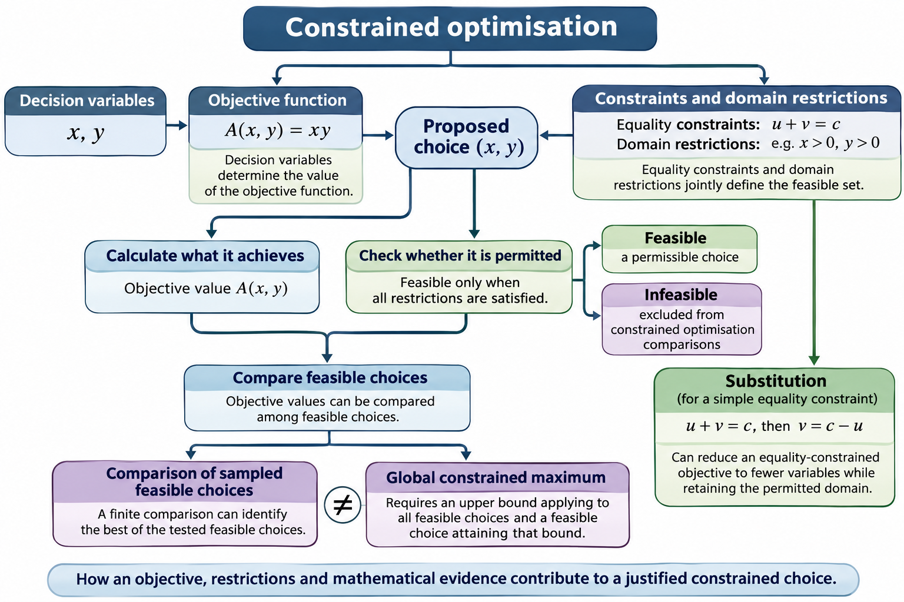
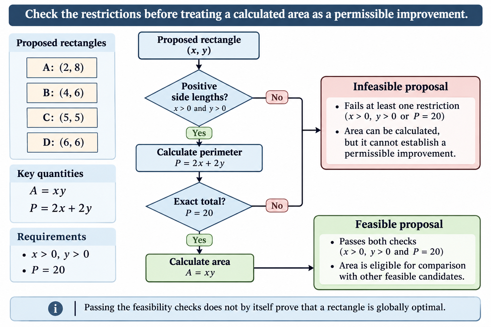
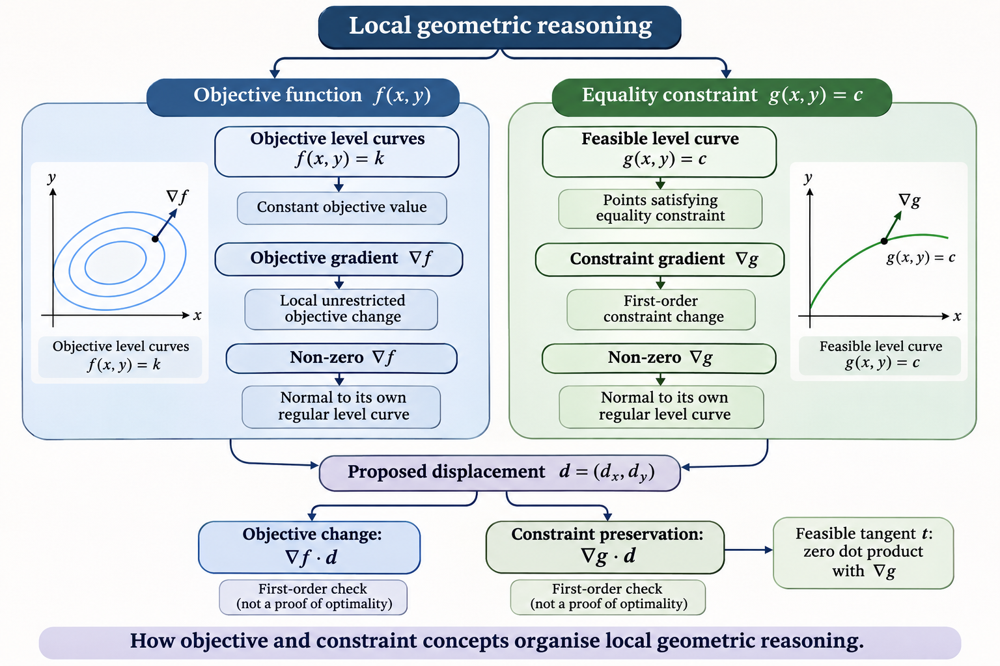
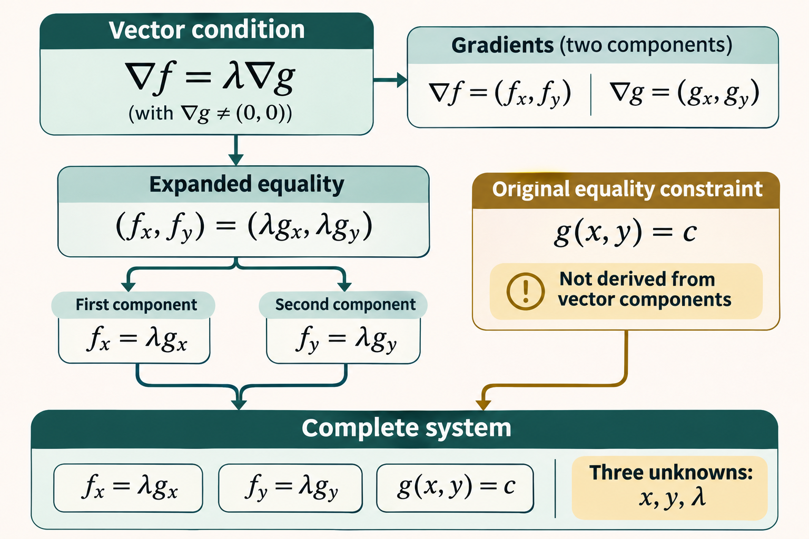
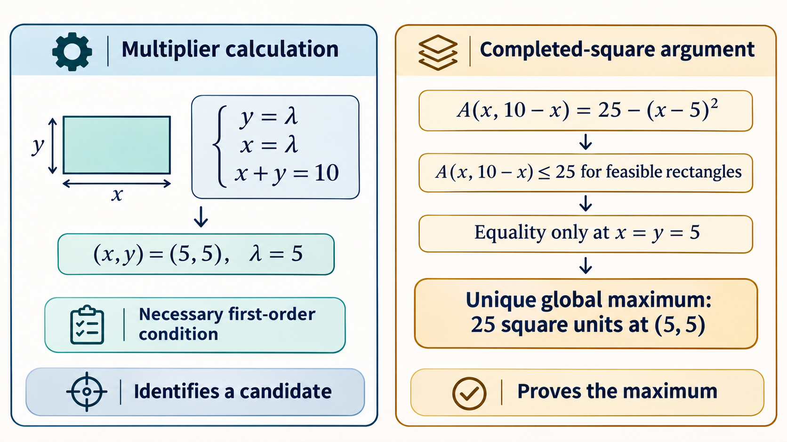
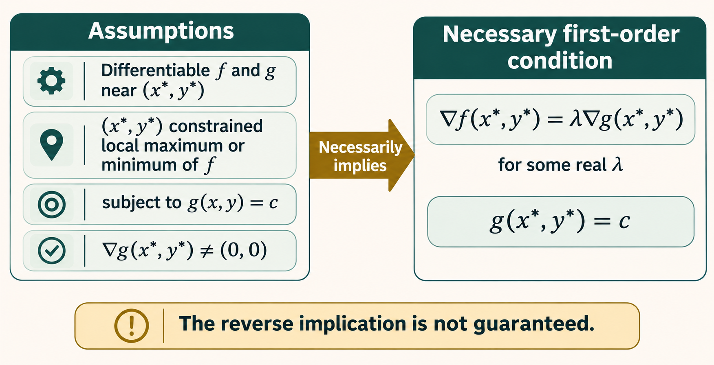

How do you find the best possible outcome when your choices are restricted?
You may already know how to differentiate a function and find stationary points. But a constrained optimisation problem is different: the best permissible solution need not be a stationary point of the unrestricted function.
In this journey, you will discover why Lagrange multipliers work, what their equations mean geometrically and how to use them to solve problems accurately.
You will begin with a familiar problem, investigate gradients and tangency, connect the geometry to the formal equations, and learn to distinguish candidate solutions from justified optima. Finally, you will apply your understanding independently in a new context.
What you will learn to do
Identify an objective function, a constraint and the feasible choices.
Explain how gradients and tangency relate to constrained optima.
Construct and solve Lagrange multiplier equations.
Recognise limitations, common errors and unsupported conclusions.
Apply the method independently and justify your answer.
Study time: Approximately 90 minutes, available to complete over one week. You can spread the experiences across several study sessions. The journey assumes familiarity with partial differentiation and basic functions of two variables, but no previous knowledge of Lagrange multipliers.
Make your predictions before viewing explanations, attempt the mathematical reasoning yourself and use feedback to revisit earlier ideas. The aim is not simply to remember a procedure, but to understand when and why it works.
Draft not saved
Why the constraint matters
Overview
This self-study resource explores a rectangle made with a fixed amount of perimeter material. Begin by recording your own prediction about which dimensions will give the largest area. You will then formulate the mathematical problem, investigate proposed rectangles, develop a justification and apply the same reasoning to a different resource decision.
Work through the three activities in order. Complete each independent attempt before opening its worked explanation or feedback. Keep your original prediction so you can compare it with your later reasoning.
Learning purpose
The activities progress from identifying the mathematical requirements of a decision, through testing proposed choices, to justifying a conclusion and evaluating a claim in a new context. Your initial prediction and subsequent responses provide a record of how your reasoning develops.
Knowledge summary
In an optimisation problem, we seek the greatest or smallest possible value of a quantity. The mathematical expression describing that quantity is called the objective function.
For a rectangle with side lengths \(x\) and \(y\), the area is
\[
A(x,y)=xy.
\]
The two side lengths are decision variables because their values describe the choice being made. The objective function assigns an area to any proposed pair of dimensions. It does not, by itself, determine whether that pair is permissible.
A constraint restricts the choices available. An equality constraint requires a specified relationship to hold exactly. For example, a requirement that two quantities have a fixed total can be written
\[
u+v=c.
\]
If the total \(c\) is fixed, increasing one quantity requires a corresponding decrease in the other. The equality therefore introduces a trade-off that would not exist if the quantities could vary independently.
A mathematical model can also impose domain restrictions. Side lengths must be positive to describe the intended rectangles. In other applications, quantities such as allocations may be permitted to equal zero but not to become negative. These conditions are part of the problem and must be checked alongside any equality constraint.
The feasible set is the collection of all choices satisfying every stated restriction. A feasible choice belongs to this set; an infeasible choice violates at least one restriction. The objective value and feasibility are different properties of a proposed choice. Calculating an attractive objective value does not establish that the proposal is allowed.
This distinction separates constrained optimisation from unconstrained optimisation. In constrained optimisation, the objective is considered only over the feasible set. Removing a restriction changes the collection of candidates and may change what can be concluded about an optimum.
There is also an important distinction between comparison and proof. Comparing several feasible candidates can identify the best among those examined. A global constrained maximum, however, requires a justification that no choice anywhere in the feasible set has a larger objective value.
For a simple equality constraint, substitution can help establish such a result. If \(u+v=c\), then \(v=c-u\). Substituting this relationship into an objective function reduces the number of variables while retaining the constraint, provided the permitted domain is also preserved. An algebraic upper bound may then establish a global maximum if a feasible choice attains that bound.
As you investigate, keep three questions distinct: What quantity is being improved? Which choices are permissible? What evidence is sufficient to justify a claim about the best permissible choice?

Figure 1. How an objective, restrictions and mathematical evidence contribute to a justified constrained choice.
Decision variables connect to an objective function, which assigns an objective value. A separate connection leads from equality constraints and domain restrictions to the feasible set. A proposed choice must satisfy all these restrictions to be feasible; otherwise it is excluded from the constrained comparison. Feasible choices can be compared by their objective values, but comparing a sample establishes only which tested candidate performs best. A global maximum requires a bound valid for every feasible choice and a feasible candidate attaining that bound. Substitution appears as one possible route to such a proof for a suitable equality constraint.
Learning outcomes
By the end of this lesson, you should be able to:
Identify the objective function, equality constraint and domain restrictions in the fixed-perimeter rectangle problem, and describe how these determine the feasible set. (LO1)
Evaluate and compare proposed rectangle dimensions by calculating their areas, checking their feasibility and distinguishing permissible choices from those that violate the fixed-perimeter requirement. (LO2)
Justify a decision about the best permissible rectangle using mathematical evidence, and explain how the fixed-perimeter restriction changes the optimisation problem compared with an unrestricted choice of positive side lengths. (LO3)
Define the permissible rectangle
Establish the distinction between the quantity being maximised and the restrictions defining permissible rectangles.
Connect your learning
The central question is what makes a choice best when resources are restricted. Familiar algebra and the formula for a rectangle's area provide the starting point for distinguishing the quantity to improve from the conditions that every permissible choice must satisfy.
You have 20 units of material to make the perimeter of a rectangle. Your aim is to obtain the largest possible area. The side lengths must be positive, and all 20 units must be used. Before calculating or comparing areas, decide what shape you expect to work best. Your initial prediction is a starting point for investigation, not a test of whether you already have the correct answer.
Start with the practical distinction between the area you want to increase and the material available to construct the rectangle. Use familiar formulae before introducing optimisation terminology. The task is to formulate the problem, not yet to establish the maximum.
Compare your original description with the feedback. What did you initially think determined a permissible rectangle, what mathematical condition confirms or challenges that view, and how would you now describe the feasible set?
Explore the idea
One rectangle, two mathematical requirements
A rectangle made from 20 units of material
Imagine making a rectangular enclosure using exactly 20 units of material around its boundary. You can change the rectangle's length and width, but you cannot change the amount of material available. Both side lengths must be positive.
Call the side lengths \(x\) and \(y\). These are decision variables: their values describe the choice you make. The rectangle's area depends on both lengths, through multiplication. Its perimeter depends on twice each length, through addition.
The objective function describes what you want to make as large as possible: the area. The equality constraint describes a condition that every permissible choice must meet: the perimeter must equal exactly 20 units. A rectangle cannot be considered a solution merely because it has an attractive area; it must also use precisely the available perimeter.
The feasible set consists of all pairs of positive side lengths that satisfy the perimeter equality. A proposed rectangle inside this set is permissible. A proposal outside it is not, even if its area looks better.
This distinction changes how you make a decision. Without the perimeter requirement, you could consider increasing both sides freely. With the requirement, increasing one side means adjusting the other to keep the total perimeter fixed.
Make your initial prediction
Before calculating an optimum, predict what kind of rectangle will have the largest area under this restriction. You might expect a long, narrow rectangle, one with nearly equal sides, or another shape. Record your reasoning first; you will return to it after investigating actual dimensions.
Reveal after your attempt: Formulating the rectangle problem
Review your formulation
Release after you have recorded your prediction and attempted all four response sections.
The rectangle has two side lengths that can vary, so let \(x\) and \(y\) represent those lengths. Because the problem asks for the greatest possible area, the quantity to maximise is
\[
A(x,y)=xy.
\]
This is the objective function. It assigns an area to each proposed pair of dimensions; by itself, it does not tell us whether that pair is allowed.
The same two dimensions determine the perimeter. A rectangle has two sides of length \(x\) and two of length \(y\). Using exactly 20 units of material therefore gives
\[
2x+2y=20.
\]
Dividing both sides by 2 gives the equivalent equality
\[
x+y=10.
\]
These equations express the same restriction. Neither permits the total perimeter to be smaller or larger than 20.
The side lengths must also be positive:
\[
x>0,\qquad y>0.
\]
Combining the objective, equality and positivity conditions gives the complete formulation:
Every pair in this set describes a permissible rectangle. A pair outside it is not a permissible choice, regardless of the area it would produce.
We have formulated the optimisation problem, but we have not yet solved it. Finding the best permissible rectangle requires comparing areas within this feasible set and eventually justifying why no other feasible rectangle can do better.
Debrief
Compare the mathematical formulation with your initial response. Did you distinguish the quantity being maximised from the conditions defining which choices are allowed? Keep your original shape prediction for the next activity.
Your task
Revising against
Record your initial prediction about the rectangle shape that will maximise area, giving a brief reason without first calculating an optimum.
My prediction and mathematical formulation
Identify the decision variables and write the objective function for area.
Express the fixed-perimeter requirement as an equality and state the restrictions on the side lengths.
Describe which pairs of side lengths belong to the feasible set, explaining how the equality and positivity conditions work together.
After receiving explanatory feedback, compare your original description with the mathematical definition and identify any distinction you initially overlooked.
What to produce
A recorded initial prediction with a reason; a correct mathematical identification of the objective, equality constraint and positive-domain restrictions; and a description of the feasible set that distinguishes what is being maximised from which choices are permitted. The learner's initial prediction remains visible and is not overwritten by the subsequent explanation.
Your draft is saved on this device when possible. It is not submitted.
Describe the rectangle shape you expect to give the largest area. Explain your reason without calculating an optimum.
Name the two quantities you can choose and write a mathematical expression for the area to be maximised.
Enter your mathematical expression. Use the maths keyboard for symbols and structures.
If the maths editor is unavailable, enter mathematical notation in this field.
Write the perimeter equality and the conditions on both side lengths.
Enter your mathematical expression. Use the maths keyboard for symbols and structures.
If the maths editor is unavailable, enter mathematical notation in this field.
Explain in words or mathematical notation which pairs of side lengths are permissible. Distinguish satisfying the restriction from obtaining a large area.
Apply the objective and restrictions to concrete alternatives, distinguishing numerical improvement from feasibility.
Connect your learning
Your formulation established two distinct tests: what area a rectangle produces and whether its dimensions satisfy the restriction. You will now apply both tests to concrete alternatives, using numerical evidence to examine your initial prediction and recognise why an attractive result may not be a valid solution.
You have defined what makes a rectangle permissible. Now examine several possible dimensions and compare their areas. Some choices may appear attractive because they produce a larger area, but every proposal must be checked against the fixed perimeter. Use the same objective and constraint throughout your investigation.
Use the same two-stage decision process for every proposal: calculate what the rectangle achieves, then check whether it is allowed. Do not infer feasibility from the size of the area. Distinguish the best of the supplied feasible examples from a mathematically proven global maximum.
What did you initially predict, which calculations most strongly confirmed or challenged that prediction, and what do you now conclude about choosing a rectangle under a fixed perimeter?
Explore the idea

Figure 2. Check the restrictions before treating a calculated area as a permissible improvement.
The pathway begins with a proposed pair of rectangle side lengths. The first check asks whether both lengths are positive. The second calculates the perimeter from two copies of each length and asks whether it equals the fixed total exactly. Failure at either check leads to an infeasible classification: the rectangle's area may be calculated, but it cannot count as a permissible improvement. Passing both checks leads to a feasible classification, after which its area may be compared with other feasible candidates. The pathway ends by distinguishing such comparison from proof of a global maximum.
Calculating area is not the same as checking feasibility
Two calculations, one decision
Consider a separate illustrative rectangle, not one of the four proposals in your investigation. Suppose its side lengths are \(x=3\) and \(y=7\), with the same 20-unit perimeter requirement.
The area is found by multiplying the side lengths:
\[
A(3,7)=3\times7=21.
\]
This gives an objective value of 21 square units. It tells us what the proposed rectangle achieves, but not yet whether it is permissible.
The perimeter uses both pairs of sides:
\[
P(3,7)=2(3)+2(7)=20.
\]
Both dimensions are positive, and the calculated perimeter matches the required total. This particular rectangle therefore belongs to the feasible set. Its area of 21 can legitimately be compared with the areas of other feasible rectangles.
Notice what the calculation establishes and what it does not. We have found the area of one permissible rectangle; we have not proved that its area is the greatest possible. That would require evidence covering all feasible alternatives, not merely one candidate.
Apply the same reasoning to proposals A–D. For each pair, calculate \(A=xy\) and \(P=2x+2y\), check positivity and the exact perimeter requirement, then compare the objective values of the feasible proposals only. A numerical area can be calculated for an infeasible proposal, but that number cannot establish a permissible improvement.
Your task
Revising against
Inspect the four proposed pairs of side lengths in the supplied comparison set.
Simulated rectangle proposals
Four proposed rectangles
These dimensions are synthetic teaching examples, provided for mathematical investigation rather than taken from measured enclosures.
Each rectangle is intended to use exactly 20 units of perimeter material. Both side lengths must be positive.
The four proposals are:
Proposal
Side length \(x\)
Side length \(y\)
A
2
8
B
4
6
C
5
5
D
6
6
For each proposal, calculate its area and actual perimeter. Decide whether it meets every restriction before comparing it with other permissible choices.
Do not assume that a proposal is feasible merely because it appears in this table. Do not assume that the largest calculated area identifies a valid solution.
Calculate the area and perimeter for each pair.
My rectangle comparison
Proposed dimensions
Calculated area
Calculated perimeter
Feasible or infeasible?
Justification
\((2,8)\)
\((4,6)\)
\((5,5)\)
\((6,6)\)
Classify each proposal as feasible or infeasible and justify the classification using the fixed-perimeter and positivity conditions.
Explain your comparison and revisit your prediction
Revisit your initial prediction, recording what you originally expected, which numerical evidence confirmed or challenged it, and what you now conclude about the role of feasibility.
What to produce
A completed comparison table containing accurate area and perimeter calculations, feasibility classifications supported by the stated restrictions, and a justified comparison of the permissible alternatives. A brief explanation distinguishes objective improvement from constraint satisfaction. A short reflection preserves the original prediction, identifies relevant numerical evidence and states a revised or confirmed judgement without treating the sample comparison alone as proof of a global optimum.
Your draft is saved on this device when possible. It is not submitted.
Explain how the permissible rectangles compare in area. Discuss whether a larger numerical area always indicates a better permissible choice.
Copy or briefly restate your initial prediction from the first activity without changing its original meaning.
Identify specific calculated areas, perimeters or feasibility checks that influenced your thinking.
State what you now think the comparison establishes, and explain any limit on what can be concluded from four proposals.
Reveal after your attempt: What the four proposals show
Review the calculated results
Release after you have completed the comparison table and explained your conclusion.
Proposed dimensions
Area
Perimeter
Feasibility
Reason
\((2,8)\)
16
20
Feasible
Both lengths are positive and the perimeter is exactly 20.
\((4,6)\)
24
20
Feasible
Both lengths are positive and the perimeter is exactly 20.
\((5,5)\)
25
20
Feasible
Both lengths are positive and the perimeter is exactly 20.
\((6,6)\)
36
24
Infeasible
Its perimeter exceeds the fixed 20-unit requirement.
The area calculations use \(A=xy\). The perimeter calculations use \(P=2x+2y\).
For example, the fourth proposal produces
\[
A(6,6)=6\times6=36
\]
but its perimeter is
\[
P(6,6)=2(6)+2(6)=24.
\]
Although 36 is larger than every other area in the table, the rectangle would require 24 units of material. It is not an improvement available under the stated restriction.
Among the three feasible proposals supplied, \((5,5)\) gives the largest area: 25 square units. This is a valid comparison of the candidates investigated.
It is not yet a proof that \((5,5)\) is the best rectangle among all positive side lengths satisfying the perimeter requirement. There are infinitely many feasible dimension pairs, and the table contains only three of them.
Debrief
Return to your original prediction. Which result was most informative: the variation in area among feasible rectangles, or the attractive but impermissible fourth proposal? Explain how that evidence affected your reasoning.
Defend the best permissible choice
Establish a global constrained maximum through algebra, contrast the restricted and unrestricted problems, and independently apply the feasibility principle to a different resource decision.
Connect your learning
The numerical comparison established which supplied rectangles are feasible and how their areas differ. It did not, by itself, establish that no untested feasible rectangle could perform better. You will now move from comparison to a general algebraic justification, then use the distinction between feasibility and objective value to evaluate a different kind of claim.
Your comparisons have shown why checking the restriction matters. Now develop a stronger mathematical justification for your decision. Use the fixed-perimeter equation to investigate all permissible positive side lengths, not just the examples already considered. Then apply the same reasoning to a different decision about what can count as a valid improvement.
Use the equality constraint to reduce the rectangle problem to one variable, then look for an algebraic reason why no feasible choice can exceed a particular area. Distinguish mathematical proof from a sample comparison. For the transfer claim, apply the same decision criteria without assuming that the largest stated output is automatically admissible.
What did you originally expect about the best rectangle, what evidence or algebra confirmed or challenged that expectation, and what can you now explain about why constraints matter in a different resource decision?
Explore the idea
From a promising example to a justified maximum
What would establish the best permissible rectangle?
The earlier investigation produced a meaningful result: several rectangles satisfied the perimeter requirement, and their areas differed. One of the supplied feasible rectangles had a larger area than the other supplied feasible rectangles. That supports a comparison of the tested choices. It does not, on its own, establish a global maximum.
The distinction matters because a fixed perimeter permits more than the few dimensions in the table. A rectangle with dimensions not yet tested might have a different area. To justify a global conclusion, an argument must cover every positive pair satisfying the perimeter equality, not only the pairs already examined.
Feasibility comes first. The perimeter equation determines which dimensions are permitted, and positivity excludes lengths that cannot represent the intended rectangle. A candidate's calculated area is relevant only after these conditions are met. This is why the proposal with an especially large area but an excessive perimeter cannot compete with feasible rectangles.
Among permissible candidates, area provides the basis for comparison. However, identifying the greatest area in a finite table and establishing a bound that no feasible rectangle can exceed are different kinds of mathematical evidence. The first is a sampled comparison; the second can justify a global conclusion.
One way to develop such a bound is to use the equality constraint to express one variable in terms of the other. Substitution then gives an area expression depending on a single variable. Algebraic rearrangement can sometimes reveal an upper bound and the condition under which equality holds. For example, an expression of the form
\[
c-(t-a)^2
\]
cannot exceed \(c\), because a square is non-negative. The bound is attained when \(t=a\), provided that value is permitted by the original restrictions. This is a general algebraic pattern, not the completed derivation for your rectangle.
A convincing conclusion must therefore bring together three things: the proposed dimensions satisfy the original restrictions; their area is correctly determined; and the reasoning rules out every feasible alternative with a larger area. If any of these is missing, the strength of the conclusion must be reduced.
There is also a meaningful comparison with an unrestricted positive-domain problem. Removing the fixed-perimeter equality changes which pairs can be chosen. A conclusion justified for the constrained feasible set need not remain valid for the larger domain.
Use these distinctions to develop your own algebraic argument before opening the worked solution. Your aim is not merely to name a plausible rectangle, but to justify exactly what the mathematics permits you to conclude.
Your task
Revising against
Use the equality constraint to express one rectangle side length in terms of the other, then substitute into the area function.
Simulated resource-allocation claim
A different resource decision
This is an illustrative, synthetic teaching model, not a validated description of an actual organisation or production process.
An organisation divides exactly 10 resource units between two activities. Let \(u\) and \(v\) denote the allocations. Neither allocation can be negative.
The illustrative output is
\[
Q(u,v)=uv.
\]
The resource restriction is
\[
u+v=10,\qquad u\geq0,\quad v\geq0.
\]
Two allocations are under discussion:
Proposal
Allocation \(u\)
Allocation \(v\)
Existing allocation
5
5
Proposed replacement
6
6
A colleague claims:
> We should prefer the replacement allocation because it produces a larger output.
Use the stated model and resource conditions to evaluate that claim. Calculate the relevant outputs and resource totals yourself before deciding whether the proposal represents a permissible improvement.
Use algebra to establish an upper bound for the area over all permissible positive side lengths and identify where that bound is attained.
My algebraic justification
Justify your decision using the criteria of feasibility, objective value and evidence sufficient to support a global conclusion.
My transfer judgement and final reflection
Explain how the optimisation problem changes if the fixed-perimeter equality is removed while side lengths remain positive.
Apply the same distinction to the supplied short resource-allocation claim: identify the objective, the resource restriction, whether the proposed allocation is permissible, and whether the claim of improvement is justified.
What to produce
A concise algebraic justification that correctly incorporates the equality and positivity restrictions, establishes a valid upper bound for the feasible area and identifies a choice attaining it. The explanation distinguishes a proof over the feasible set from a comparison of selected examples and contrasts the constrained problem with the unrestricted positive-domain problem. A separate short transfer judgement identifies the relevant objective and restriction in the changed context, checks the proposed choice against the available resource and justifies whether its claimed improvement is permissible. A final reflection identifies the initial view, decisive evidence and current conclusion.
Your draft is saved on this device when possible. It is not submitted.
Rearrange the perimeter equality to express one side length in terms of the other. Record the permissible domain for the remaining variable.
Enter your mathematical expression. Use the maths keyboard for symbols and structures.
If the maths editor is unavailable, enter mathematical notation in this field.
Write the output function, exact resource equality and non-negativity conditions from the scenario.
Enter your mathematical expression. Use the maths keyboard for symbols and structures.
If the maths editor is unavailable, enter mathematical notation in this field.
Substitute your expression into the area function and simplify.
Enter your mathematical expression. Use the maths keyboard for symbols and structures.
If the maths editor is unavailable, enter mathematical notation in this field.
Calculate the output and total resource use for each allocation. State whether each proposal satisfies every restriction.
Enter your mathematical expression. Use the maths keyboard for symbols and structures.
If the maths editor is unavailable, enter mathematical notation in this field.
Rearrange the area expression to show why no feasible choice can exceed a particular value. Explain why the inequality holds.
Enter your mathematical expression. Use the maths keyboard for symbols and structures.
If the maths editor is unavailable, enter mathematical notation in this field.
Explain whether the proposed replacement is a permissible improvement. Support your judgement with the relevant numerical results and the distinction between output and feasibility.
Identify the dimensions that attain the bound, check the original restrictions and explain why the argument establishes a global conclusion.
Return to your original rectangle prediction. State what you initially expected, which calculations or algebra confirmed or changed your thinking, and what you now understand about deciding what counts as the best permissible choice.
Explain what changes when the perimeter equality is removed but the side lengths remain positive. Discuss whether the same finite maximum is still justified.
Have you accurately explained how removing the perimeter equality changes the optimisation problem?
Show guidance for criterion 3
Why this matters
A maximum proved for a restricted feasible set need not remain a maximum when the domain is enlarged.
What to look for
A. Your explanation distinguishes the original feasible set from the positive-domain choices available without the equality.
B. Your conclusion about a finite maximum is supported by reasoning about how area changes as dimensions increase.
If something is missing
Missing A: Identify which restriction is removed and which positivity conditions remain, then describe how the permitted choices change.
Missing B: Consider whether both positive dimensions can increase without violating any remaining condition, and connect that possibility to the area product.
Have you supported the transfer judgement with the resource calculations and explained how the evidence affected your original thinking?
Show guidance for criterion 4
Why this matters
A valid transfer judgement must evaluate the new claim under its own restrictions, while the reflection should show how evidence changed or confirmed your understanding.
What to look for
A. Both allocation proposals have calculated outputs and resource totals.
B. Your judgement distinguishes larger calculated output from permissible improvement.
C. Your reflection identifies the original rectangle prediction, decisive evidence and current conclusion.
If something is missing
Missing A: Apply the supplied output expression and resource-sum condition separately to each allocation before making a comparison.
Missing B: State whether each allocation satisfies the exact resource requirement, then explain how that classification affects the colleague's claim.
Missing C: Restore your initial prediction and connect at least one numerical comparison or algebraic result to the conclusion you now hold.
Reveal after your attempt: Proving the rectangle maximum
Release after you have completed your algebraic justification and unrestricted-problem comparison.
Reducing the problem to one variable
The fixed-perimeter equality is
\[
2x+2y=20.
\]
Dividing by 2 gives \(x+y=10\), so
\[
y=10-x.
\]
Because both side lengths must be positive, the remaining variable must satisfy
\[
0<x<10.
\]
Every value in this interval determines exactly one feasible pair \((x,10-x)\). The substitution therefore covers the entire feasible set, not merely the examples previously tested.
For every real \(x\), the squared term is non-negative:
\[
(x-5)^2\geq0.
\]
Consequently, every feasible rectangle satisfies
\[
A(x,10-x)=25-(x-5)^2\leq25.
\]
This is a global upper bound on area for the stated feasible set.
Equality occurs precisely when
\[
(x-5)^2=0,
\]
which requires \(x=5\). The perimeter equality then gives \(y=5\). Both lengths are positive, and their sum is 10, so the rectangle is feasible.
The unique global maximum for this problem is therefore attained at
\[
(x,y)=(5,5),\qquad A_{\max}=25.
\]
The maximum area is 25 square units.
This conclusion is stronger than the earlier numerical comparison. The completed-square expression applies to every permissible positive side length, so it proves that no feasible rectangle has a larger area. The equality condition also establishes uniqueness.
What happens without the perimeter restriction?
If the equality \(x+y=10\) is removed while \(x>0\) and \(y>0\) remain, the area is still \(A(x,y)=xy\), but the choice of dimensions is no longer restricted by the fixed amount of material.
For any positive dimensions, increasing one side while keeping the other positive increases the area. Both dimensions can also grow without bound. For example, taking \(x=y=t\) gives
\[
A(t,t)=t^2,
\]
which increases without bound as positive \(t\) increases.
Thus the unrestricted positive-domain problem has no finite global maximum. The finite maximum of 25 arises from the fixed-perimeter constraint.
Debrief
The numerical investigation helped identify a promising feasible choice. The algebra established why it is globally optimal. The constraint is not an incidental detail: it defines the domain over which the claim of optimality is valid.
Review the example response
Reveal after your attempt: Reviewing the allocation claim
Release after you have submitted your independent resource-allocation judgement.
The illustrative output function is
\[
Q(u,v)=uv,
\]
with the exact resource restriction
\[
u+v=10,\qquad u\geq0,\quad v\geq0.
\]
For the proposed replacement \((6,6)\), the output is
\[
Q(6,6)=6\times6=36.
\]
But the total resource use is
\[
6+6=12.
\]
This exceeds the available 10 units, so the replacement is infeasible.
For the existing allocation \((5,5)\), the output is
\[
Q(5,5)=5\times5=25.
\]
Its total resource use is
\[
5+5=10,
\]
and both allocations are non-negative. It is therefore feasible.
The colleague is correct that the replacement has a larger calculated output under the illustrative function. However, the claim that it should be preferred under the fixed resource condition does not follow: the proposed replacement uses more resource than is available.
The defensible judgement is that the larger output is not a permissible improvement under the stated restriction. This comparison evaluates the proposed replacement; it does not, by itself, prove that the existing allocation is globally optimal among all feasible allocations.
Debrief
The mathematical structure is familiar even though the context has changed. An objective measures what you want to improve; a constraint determines which choices are allowed. A defensible decision requires both.
Transfer your learning
Evaluate a different claim of improvement
Return to the simulated resource-allocation claim in the accompanying scenario. This time the decision concerns dividing a fixed resource between two activities, rather than choosing the dimensions of a rectangle.
Write a short judgement addressed to the colleague making the proposal.
Identify the output function and the exact resource restriction.
Calculate the output and total resource use for each proposed allocation.
Decide which allocations satisfy all the stated conditions.
Evaluate the claim that the replacement should be preferred because it has a larger output.
Explain, using the calculations, what would have to be true for a proposed improvement to count as permissible.
Your response should reach a clear, evidence-based judgement about this claim. You do not need to prove a global maximum for the allocation model. Do not use the rectangle's particular dimensions as an answer to the new decision.
Your draft is saved on this device when possible. It is not submitted.
Draft not saved
Seeing gradients and tangency
Overview
This self-study resource explores how gradients, level curves and feasible movements help us understand constrained optimisation. Begin with the fixed-perimeter rectangle and work through four connected activities. Record your predictions and calculations before opening the corresponding feedback. Where a diagram is provided, use its accompanying equations, coordinates and descriptions to check your interpretation.
Learning purpose
The activities progress from interpreting mathematical representations to constructing and evaluating your own geometric explanations. Each stage provides an opportunity to make a judgement, test it against mathematical evidence and revise your reasoning before moving towards greater independence.
Knowledge summary
Constrained optimisation asks us to investigate the values of an objective function while respecting a restriction on the permitted choices.
For a rectangle with positive side lengths \(x\) and \(y\), the area is
\[A(x,y)=xy.\]
If its perimeter is fixed at 20 units, the permissible dimensions satisfy
\[2x+2y=20,\qquad x>0,\quad y>0.\]
This is an equality-constrained optimisation problem. The objective describes what is being investigated; the constraint describes which points are feasible. A point may have an attractive objective value without satisfying the constraint.
Functions and level curves
A level curve of a function \(f(x,y)\) consists of points satisfying
\[f(x,y)=k,\]
where \(k\) is constant. Different values of \(k\) identify different level curves. An objective level curve therefore represents a constant objective value. A constraint equation \(g(x,y)=c\) also defines a level set, but its role is to identify feasible points.
These curves need not coincide. Moving along an objective level curve preserves the objective value; moving along a constraint curve preserves the constraint value. Distinguishing these two statements is central to interpreting the geometry.
Gradients and local change
For a differentiable function of two variables, the gradient is
Its components describe the rates of change associated with the coordinate directions. At a point where the gradient is non-zero, it points in the direction of steepest local increase per unit distance when movement is unrestricted.
A proposed small displacement can be represented by a vector \(\mathbf{d}=(d_x,d_y)\). The dot product
\[\nabla f\cdot\mathbf{d}\]
expresses the first-order rate of change along that displacement. A positive result indicates first-order increase in the specified direction, a negative result indicates decrease, and zero indicates no first-order change along that direction. Zero first-order change does not, by itself, establish a maximum or minimum.
Tangents and normals
A tangent direction describes the local direction of a smooth curve. A normal direction is perpendicular to its tangent.
The dot product provides an algebraic way to investigate perpendicularity. For vectors \(\mathbf{a}=(a_1,a_2)\) and \(\mathbf{b}=(b_1,b_2)\),
\[\mathbf{a}\cdot\mathbf{b}=a_1b_1+a_2b_2.\]
If two non-zero vectors have dot product zero, they are perpendicular.
For a differentiable function, a non-zero gradient is normal to a regular level curve through the point. The objective gradient and the constraint gradient therefore have distinct roles: each describes local change in its own function. Their relationships to tangent directions can be investigated using the same vector method.
Feasible directions and first-order reasoning
For a smooth equality constraint \(g(x,y)=c\), a feasible tangent direction \(\mathbf{t}\) satisfies
\[\nabla g\cdot\mathbf{t}=0.\]
This condition describes preservation of the constraint to first order. It does not automatically mean that the objective is unchanged along that direction.
In this resource, you will compare the objective's local change with the directions permitted by the rectangle constraint. You will then investigate what additional geometric relationship is associated with a regular constrained stationary candidate.
The relevant regularity assumption is
\[\nabla g\ne\mathbf{0}.\]
It matters because a zero constraint gradient cannot identify a unique normal direction through the usual gradient argument. First-order conditions also need to be distinguished from independent evidence that a candidate is genuinely optimal.
Use these definitions and methods as preparation. The activity-specific calculations, geometric conclusions and worked interpretations are reserved for the investigations and their reveal-after-feedback materials.

Figure 1. How objective and constraint concepts organise local geometric reasoning.
The map separates an objective function from an equality constraint. Each leads to its own level curve and gradient. Where a gradient is non-zero, it is normal to its regular level curve. A proposed displacement connects to two distinct tests: its dot product with the objective gradient indicates first-order objective change, while its dot product with the constraint gradient indicates first-order constraint change. The map does not identify an optimum or complete the tangency argument.
Learning outcomes
By the end of this lesson, you should be able to:
Interpret objective level curves and gradient vectors for the fixed-perimeter rectangle, predicting directions of local increase and distinguishing them from movements permitted by the constraint. (LO1)
Compare gradient, tangent and normal directions at selected points, using vector components and geometric relationships to explain how objective values and constraint values change locally. (LO2)
Investigate feasible movement near a candidate constrained optimum and justify, using tangent and gradient relationships, why no first-order improvement is possible along the feasible constraint at a regular optimum. (LO3)
Construct an independent geometric explanation of the parallel-gradient condition grad f=lambda grad g at a regular constrained optimum, distinguishing this necessary first-order condition from a proof of optimality. (LO4)
Predict gradients and feasible movement
Connect your learning
The fixed-perimeter rectangle provides a familiar setting for investigating a new distinction: an objective can increase in a direction that the constraint does not permit. This activity connects feasible-choice reasoning to level curves and gradients.
If you completed 'Why the constraint matters', revisit your initial prediction about the rectangle's dimensions and your reasoning about which choices were feasible. Use that reasoning to distinguish changes that preserve the perimeter from changes that increase area without necessarily preserving it.
Predict before revealing explanations. Keep separate the question of whether area increases and the question of whether the perimeter constraint remains satisfied.
Which part of your reasoning establishes that area increases, and which part establishes that a movement is feasible? If your initial prediction changed, identify the mathematical observation responsible.
Explore the idea
Figure 2. Inspect constant-area curves and the perimeter constraint before judging the supplied points.
The horizontal and vertical axes represent positive side lengths x and y. The descending straight line x+y=10 crosses the curved level sets xy=16 and xy=24. Points (2,8) and (4,6) are marked on the corresponding constant-area curves and on the straight line. Point (6,6) is marked separately in the same coordinate plane. The curve types are identified independently of colour. No gradient arrow, optimal point or feasibility classification is supplied.
How level curves, gradients and constraints fit together
Three ways to describe the same optimisation problem
An objective function assigns a value to every point in its domain. For the rectangle, \(A(x,y)=xy\) assigns an area to each pair of positive side lengths. An objective level curve collects all points with the same objective value. Moving along one level curve changes the dimensions but keeps the area constant.
The gradient of a differentiable function is the vector of its partial derivatives:
\[\nabla f=(f_x,f_y).\]
Where this gradient is non-zero, its direction gives the steepest local increase in the function per unit distance. It describes what would happen if movement were unrestricted. Its components also allow us to estimate the first-order effect of a proposed small change.
The perimeter condition introduces a different question. A permitted movement must keep \(x+y=10\) and must not leave the positive-dimensions domain. A direction that increases area may fail that test. Conversely, a movement that preserves perimeter need not follow the direction of steepest unrestricted increase.
These relationships describe two distinct kinds of movement within the same mathematical system: movement selected for its effect on the objective, and movement permitted by the constraint. The geometric problem is to understand how they interact.
In a diagram, an objective level curve is a constant-area path, a gradient arrow indicates local unrestricted increase, and the constraint line marks allowable dimensions. These meanings do not depend on colour or visual arrow length.
Your task
Revising against
Inspect the rectangle objective and constraint, then interpret the meaning of two objective level curves and the feasible constraint line.
Simulated rectangle: level curves and feasible choices
A rectangle with fixed perimeter
This is a simulated mathematical teaching example, not an empirical dataset.
A rectangle has positive side lengths \(x\) and \(y\) and a fixed perimeter of 20 units. Its area is
\[A(x,y)=xy.\]
The perimeter condition is
\[2x+2y=20,\]
or equivalently
\[g(x,y)=x+y=10,\qquad x>0,\quad y>0.\]
Points to inspect
Point \((x,y)\)
Area \(A(x,y)\)
Coordinates sum \(x+y\)
\((2,8)\)
16
10
\((4,6)\)
24
10
\((6,6)\)
36
12
The objective level curves through the first two points have equations \(xy=16\) and \(xy=24\). Every point on one such curve has the area specified by its equation.
For your direction prediction, begin at \((4,6)\). Substitute its coordinates into the general objective-gradient formula before deciding where a small movement would increase area.
Visual inspection guide
In an \(x\)-\(y\) plane, the horizontal coordinate is the first side length and the vertical coordinate is the second. The constraint \(x+y=10\) is a straight descending line through the positive quadrant. Each objective level curve \(xy=c\), for positive \(c\), is a curved line representing a fixed area. The three labelled points can be identified by coordinates without relying on colour.
An interactive representation may allow a point to move freely or remain attached to the constraint line. Record the coordinates and equation values as well as observing the visual movement. Do not assume that movement increasing area also preserves perimeter.
At a supplied feasible point, predict a direction of local area increase using the gradient components.
Record your predictions and reasoning
Decide whether that direction preserves the constraint, and identify a permitted direction of movement.
What to produce
A recorded interpretation of the supplied level curves, a predicted direction of local increase supported by gradient components, a correctly justified feasibility decision, and an explanation distinguishing movement that increases area from movement that preserves the constraint. The response should refer to equations or coordinates rather than relying only on a graphical impression.
Your draft is saved on this device when possible. It is not submitted.
Record your response for Level-curve interpretation.
Record your response for Predicted increase direction.
Record your response for Feasible movement.
Record your response for Explanation of the distinction.
Complete your response first, then use this material to check or improve it.
Review your answer
Criterion 1 of 4
Have you interpreted the objective level curves as sets of constant area?
Show guidance for criterion 1
Why this matters
Confusing a level curve with a permitted path would obscure the difference between preserving area and preserving perimeter.
What to look for
A. Each supplied level-curve equation is associated with its stated area.
B. Your explanation distinguishes constant-area movement from fixed-perimeter movement.
If something is missing
Missing A: Substitute the coordinates of the two supplied feasible points into the objective and associate each result with the appropriate equation \(xy=c\).
Missing B: State which equation remains constant along an objective level curve and which equation must remain constant for feasibility.
Have you tested feasibility against the actual perimeter constraint?
Show guidance for criterion 3
Why this matters
Without a constraint check, the response may mistake an area-increasing movement for an admissible one.
What to look for
A. The proposed movement is checked against \(x+y=10\).
B. Your reasoning respects positive side lengths and distinguishes the infeasible comparison point.
If something is missing
Missing A: Write the new coordinate sum or the condition on the changes \(\Delta x+\Delta y\), then use it to evaluate feasibility.
Missing B: Check both the coordinate sum and the positivity of the dimensions; explain why the comparison point cannot be selected solely because of its area.
Reveal after your prediction: directions and feasibility
Review your initial reasoning
Open this explanation only after recording your predictions.
The level curve \(xy=16\) contains \((2,8)\), and \(xy=24\) contains \((4,6)\). Their areas differ because they lie on different objective level curves. Both points satisfy \(x+y=10\). By contrast, \((6,6)\) has area 36 but gives \(x+y=12\), so it violates the fixed-perimeter constraint. A larger objective value does not make a point an admissible choice.
At \((4,6)\),
\[\nabla A(4,6)=(6,4).\]
The gradient points towards increasing both coordinates and is the direction of steepest unrestricted local area increase. A small step \((\Delta x,\Delta y)=\varepsilon(6,4)\), for \(\varepsilon>0\), changes the coordinate sum by \(10\varepsilon\). It therefore fails to preserve the perimeter.
A movement along the constraint must satisfy
\[\Delta x+\Delta y=0.\]
For example, the direction \((1,-1)\) increases one side while decreasing the other by the same amount. From \((4,6)\), a sufficiently small positive step in this direction remains feasible and changes area as follows:
\[A(4+t,6-t)=(4+t)(6-t)=24+2t-t^2.\]
For small positive \(t\), area increases even though the movement is not parallel to the objective gradient. The direction \((-1,1)\) is also feasible locally, but has a different effect on area.
Compare your response with these two separate checks: the objective gradient indicates unrestricted local increase; the constraint equation determines whether a movement is allowed. Revise any statement that treats those checks as interchangeable.
Closure
Keep the two questions separate when moving into the next activity: which direction changes the objective, and which direction preserves the constraint?
Compare gradients, tangents and normals
Connect your learning
The predictions about local increase and feasibility provide two different directional relationships. Comparing gradient, tangent and normal vectors makes those relationships mathematically explicit.
You have distinguished unrestricted objective increase from movement that preserves the perimeter. Now investigate how the directions of gradients and tangents explain that distinction.
Use vector components and perpendicularity rather than the apparent angle or colour of a graphical arrow. Compare objective-level and constraint-level relationships separately before connecting them.
Why does a tangent to an objective level curve have a different mathematical role from a feasible tangent to the constraint?
Explore the idea
Figure 3. Compare four candidate vector directions before assigning tangent and normal roles.
At the point (4,6), the curved line xy=24 and the descending straight line x+y=10 cross. Four vectors begin at the shared point and carry the component labels (6,4), (4,-6), (1,1) and (1,-1). Their orientations can be compared against the two curves and coordinate axes. The figure does not identify which vectors are tangents or normals, indicate right angles or provide dot-product results. Those relationships remain for the learner to establish.
Why gradients are normal to regular level curves
From constant values to perpendicular vectors
Consider a differentiable function \(f(x,y)\) and a smooth path \(\mathbf{r}(t)\) that stays on one of its level curves. Because the function has the same value at every point on that path, \(f(\mathbf{r}(t))\) is constant.
The vector \(\mathbf{r}'(t)\) is tangent to the path. Thus, if \(\mathbf{t}\) is a tangent direction, the first-order change of the function in that direction is zero:
\[\nabla f\cdot\mathbf{t}=0.\]
The dot product of two non-zero vectors is zero when they are perpendicular. Therefore, where \(\nabla f\ne\mathbf{0}\), the gradient is normal to the regular level curve's tangent direction.
This argument applies to either kind of level curve. An objective level curve keeps the objective value constant; a constraint level curve keeps the constraint function constant. Each has its own gradient and potentially a different tangent direction.
A zero gradient does not provide a unique normal direction through this argument. The non-zero-gradient condition is therefore part of the geometric interpretation, not a detail that can always be omitted.
Use this general mechanism to classify the vectors supplied in the task card. Do not assume that a tangent to one curve must also be tangent to the other.
Your task
Revising against
Inspect the objective and constraint information at the supplied feasible point.
Vector and curve comparison workspace
Vector
Curve or function
Relationship to gradient
Mathematical check
Meaning of movement
\((6,4)\)
\((4,-6)\)
\((1,1)\)
\((1,-1)\)
Determine a tangent direction to the objective level curve and compare it with the objective gradient.
Simulated vector evidence at a feasible point
Card 1
Compare four geometric roles
This is a simulated mathematical teaching example using the fixed-perimeter rectangle.
At the feasible point \((4,6)\), the objective and constraint are
\[A(x,y)=xy,\qquad A(4,6)=24,\]
\[xy=24,\qquad x+y=10.\]
The objective level curve through the point is \(xy=24\). The feasible constraint line is \(x+y=10\).
Your task is to decide which candidate direction is tangent to which curve, and to justify the classification using gradient relationships. Neither candidate has been assigned a tangent role here.
For a vector \((a,b)\), the first component represents horizontal movement and the second represents vertical movement. Positive components increase a coordinate; negative components decrease it. The curves and vectors can therefore be compared from their equations and components without using a visual colour key.
Identify a feasible tangent direction and compare it with the constraint gradient.
Use dot products or equivalent component reasoning to explain which vectors are perpendicular and what each direction means for local objective and constraint change.
What to produce
A comparison of objective-gradient, objective-tangent, constraint-gradient and feasible-tangent directions, with appropriate vector components and justified perpendicularity relationships. The explanation must distinguish movement along a constant-objective curve from movement along the constraint, and interpret local change without relying solely on the visual representation.
Your draft is saved on this device when possible. It is not submitted.
Determine a tangent direction to the objective level curve and compare it with the objective gradient.
Identify a feasible tangent direction and compare it with the constraint gradient.
Use dot products or equivalent component reasoning to explain which vectors are perpendicular and what each direction means for local objective and constraint change.
Reveal after comparison: tangent and normal checks
Verify the vector relationships
Open this explanation after completing the comparison table.
For the objective level curve \(xy=24\), the gradient at \((4,6)\) is \((6,4)\). The candidate direction \((4,-6)\) satisfies
\[(6,4)\cdot(4,-6)=24-24=0.\]
It is therefore tangent to the objective level curve at the selected point. Movement along this tangent produces zero first-order change in area.
For the constraint line \(x+y=10\), the gradient is \((1,1)\). The candidate direction \((1,-1)\) satisfies
\[(1,1)\cdot(1,-1)=1-1=0.\]
It is tangent to the constraint and describes a feasible direction of movement. For sufficiently small movements from the interior point \((4,6)\), both side lengths remain positive.
The two tangent directions are not interchangeable. In particular,
\[(6,4)\cdot(1,-1)=6-4=2,\]
so the feasible tangent is not an objective-level tangent at this point. Moving in its positive direction increases area to first order.
Likewise,
\[(1,1)\cdot(4,-6)=4-6=-2,\]
so the objective-level tangent does not preserve the constraint to first order.
Both gradients are non-zero. Each is a normal to its own level curve, but they are not parallel at \((4,6)\).
In words: the objective gradient is perpendicular to the direction that keeps area constant; the constraint gradient is perpendicular to the direction that keeps perimeter constant. These are distinct geometric statements.
Closure
The next activity uses the feasible tangent to investigate when its first-order effect on the objective becomes zero.
Investigate movement at tangency
Connect your learning
The distinction between objective and constraint normals can now be applied to a candidate optimum. Learners use the established vector relationships to investigate what happens to the objective along the feasible tangent.
The gradient and tangent comparisons now provide a way to investigate whether a feasible movement can improve the rectangle's area to first order.
Make a prediction about first-order feasible change before examining the complete geometric explanation. Distinguish zero first-order change from proof of a global maximum.
How did your prediction about feasible improvement compare with the vector evidence? Explain what the evidence establishes and what it does not establish.
Your task
Revising against
Inspect the supplied feasible rectangle points and predict how the objective changes for small movements in the feasible tangent direction.
Simulated feasible movement at two rectangle points
Investigate first-order change
This is a simulated mathematical teaching example using the same rectangle.
A small step of size \(h\) along this direction changes the coordinates from \((x,y)\) to \((x+h,y-h)\). For sufficiently small positive or negative \(h\), both supplied points remain within the positive-dimensions domain.
At each point, use the objective gradient and the same feasible tangent to investigate the first-order change in area. Compare the result with the constraint gradient, and then explain what the relationship does or does not establish.
If a graph is available, both points lie on the straight line \(x+y=10\). Their coordinates, areas and the direction \((1,-1)\) are supplied here so the task can be completed without interpreting colour or arrow placement.
Calculate or explain the objective's first-order change along that direction at the selected points.
Predict, calculate and explain tangency
Construct a geometric justification for the relationship between feasible stationarity, tangency and parallel gradients, stating the regularity assumption and the limit of the first-order conclusion.
What to produce
A comparison of first-order objective change along the feasible tangent at the supplied points, supported by vector calculations or equivalent reasoning. The learner identifies the stationary relationship at the candidate point and justifies it through feasible tangent and normal directions. The explanation distinguishes a necessary first-order condition from an independent proof of optimality.
Your draft is saved on this device when possible. It is not submitted.
Record your response for Initial prediction.
Record your response for First-order change comparison.
Enter your mathematical expression. Use the maths keyboard for symbols and structures.
If the maths editor is unavailable, enter mathematical notation in this field.
Record your response for Gradient relationship.
Enter your mathematical expression. Use the maths keyboard for symbols and structures.
If the maths editor is unavailable, enter mathematical notation in this field.
Record your response for Geometric justification and scope.
Have you distinguished a necessary first-order condition from proof of optimality?
Show guidance for criterion 4
Why this matters
Treating stationarity as sufficient would overstate what the gradient calculation establishes.
What to look for
A. Your conclusion identifies a stationary candidate or necessary condition.
B. Any claim of a maximum is supported independently of the gradient equation.
If something is missing
Missing A: Qualify the gradient relationship as a first-order condition under the stated regularity assumptions.
Missing B: If you assert optimality, identify an additional argument using the objective and feasible domain rather than relying solely on gradient alignment.
Figure 4. Compare local feasible movement at two points before calculating first-order change.
Two coordinate-plane views show the same descending constraint line x+y=10. One view marks (4,6) on the area level curve xy=24; the other marks (5,5) on xy=25. At each point, a vector labelled (1,-1) indicates a feasible direction, and an objective-gradient arrow shows the direction obtained from the general gradient formula. The views invite comparison but contain no directional-derivative results, tangency labels, multiplier values or optimality conclusions.
Reveal verified feedback
Reveal after investigation: why gradients align
From feasible stationarity to parallel gradients
Open this explanation after recording your prediction, calculations and geometric justification.
For a differentiable equality constraint \(g(x,y)=c\), a feasible tangent \(\mathbf{t}\) preserves the constraint to first order:
\[\nabla g\cdot\mathbf{t}=0.\]
At an interior constrained local optimum, moving a small amount in either feasible tangent direction cannot produce a first-order improvement. The objective's directional derivative along the feasible tangent must therefore be zero:
\[\nabla f\cdot\mathbf{t}=0.\]
Thus the objective gradient is perpendicular to the feasible tangent. Where the constraint gradient is non-zero, it is also perpendicular to that tangent. In two dimensions, the vectors perpendicular to a non-zero tangent form a single normal direction. Consequently,
\[\nabla f=\lambda\nabla g\]
for some scalar \(\lambda\). This includes the case \(\nabla f=\mathbf{0}\), where \(\lambda=0\).
The objective gradient is a scalar multiple of the constraint gradient:
\[\nabla A(5,5)=(5,5)=5(1,1)=5\nabla g.\]
The objective level curve and constraint line share a tangent direction at this point. In geometric terms, their normal directions align. There is no first-order area change along the feasible tangent.
What the calculation establishes
This is a first-order necessary condition for a differentiable constrained local optimum under the regularity assumption \(\nabla g\ne\mathbf{0}\). It is not, by itself, proof of a maximum or minimum. A stationary candidate may require further investigation.
For this particular rectangle, a separate algebraic argument establishes the global maximum:
\[A=x(10-x)=25-(x-5)^2\leq25\]
for \(0<x<10\), with equality at \(x=5\), hence \(y=5\). That conclusion uses the objective and feasible domain, not merely the parallel-gradient equation.
Closure
The multiplier equation describes a relationship between normals at a regular stationary candidate. The next activity asks you to explain that relationship independently and investigate what happens when the same constraint is written differently.
Explain and test gradient alignment
Connect your learning
The previous investigation established the connection between feasible tangents, gradient normals and first-order stationarity. This activity consolidates that reasoning into an independent explanation and tests whether it remains valid when the same constraint is expressed differently.
You have investigated feasible stationarity and its geometric explanation. Now construct a concise independent account and apply the same reasoning to a changed representation of the constraint.
Build the explanation from the constraint and feasible tangent rather than beginning with the multiplier equation alone. Treat a multiplier relationship as a necessary first-order condition under regularity, not as a general certificate of optimality.
Which parts of your argument depend on the geometric constraint itself, and which depend on the particular equation used to represent it? Identify one condition you would check before applying the argument elsewhere.
Your task
Revising against
Write an independent geometric explanation of why the objective and constraint gradients satisfy a scalar-multiple relationship at a regular constrained local optimum.
Independent explanation and application workspace
State how the sign of the scalar affects the orientation of non-zero gradients and why satisfying the relationship alone does not prove an optimum.
Transfer judgement and evidence workspace
Apply the reasoning to the equivalent rectangle constraint \(2x+2y=20\): determine its gradient, express the proportionality relationship at the candidate point, and explain which geometric properties remain unchanged.
Simulated equivalent constraints at the candidate point
Card 1
One rectangle, two constraint equations
This is a simulated mathematical teaching example.
Consider the rectangle with objective
\[A(x,y)=xy\]
at the candidate point \((5,5)\).
The original perimeter constraint is
\[g_1(x,y)=x+y=10.\]
An alternative equation describing the same permitted rectangles is
\[g_2(x,y)=2x+2y=20.\]
The objective gradient is given by
\[\nabla A(x,y)=(y,x).\]
For the original constraint,
\[\nabla g_1=(1,1).\]
The constraint-gradient regularity requirement is that the relevant gradient is not the zero vector. Both constraint representations can be checked against that requirement.
Use these particulars to construct your own geometric explanation of first-order stationarity. Then derive the gradient for the alternative representation and compare the two scalar-multiple equations. Keep separate the feasible set described by an equation and the numerical components of its gradient.
All values can be inspected algebraically; no diagram is required.
Simulated claim for mathematical evaluation
Card 1
Claim to evaluate
This is a simulated instructional claim, not an established mathematical conclusion.
> If two equations describe the same feasible constraint, the Lagrange multiplier must have the same numerical value in both equations.
Conditions for the comparison:
The objective is \(A(x,y)=xy\).
The candidate point is \((5,5)\).
The first constraint is \(x+y=10\).
The second constraint is \(2x+2y=20\).
Both equations describe the same set of positive side lengths.
Use the proportionality form \(\nabla A=\lambda\nabla g\), with a multiplier corresponding to each constraint representation.
Evaluate the stated claim using these particulars. Do not assume that equivalence of the feasible sets determines every quantity appearing in the two gradient equations.
What to produce
A coherent learner-produced explanation connecting feasible tangents, first-order objective change, non-zero constraint normals and scalar-multiple gradients, with an accurate necessary-versus-sufficient distinction. The response should correctly interpret gradient orientation, apply the reasoning to an equivalent constraint representation, and defend a judgement about multiplier scaling using relevant mathematical components. The transfer response must go beyond repeating the original explanation.
Your draft is saved on this device when possible. It is not submitted.
Record your response for Feasible tangent reasoning.
Record your response for Claim judgement.
Record your response for Parallel-gradient explanation.
Record your response for Mathematical evidence.
Enter your mathematical expression. Use the maths keyboard for symbols and structures.
If the maths editor is unavailable, enter mathematical notation in this field.
Record your response for Gradient orientation.
Record your response for Justification and scope.
Record your response for Limits of the condition.
Record your response for Equivalent-constraint application.
Enter your mathematical expression. Use the maths keyboard for symbols and structures.
If the maths editor is unavailable, enter mathematical notation in this field.
Complete your response first, then use this material to check or improve it.
Review your answer
Criterion 1 of 4
Have you constructed the complete geometric argument from feasible movement to gradient proportionality?
Show guidance for criterion 1
Why this matters
A multiplier equation without its tangent-and-normal reasoning does not demonstrate why the relationship is necessary at a regular constrained optimum.
What to look for
A. Your explanation identifies feasible tangent directions through the constraint.
B. Zero first-order objective change is linked to a normal-direction relationship.
C. The scalar-multiple conclusion follows from the shared normal direction.
If something is missing
Missing A: Start from the requirement that a small feasible movement preserve the constraint to first order.
Missing B: Explain what the objective directional derivative must be at a constrained local optimum and what that implies about the objective gradient.
Missing C: Connect the objective normal and the non-zero constraint normal to the same feasible tangent before writing the multiplier equation.
Have you justified your transfer judgement using both constraint representations?
Show guidance for criterion 4
Why this matters
The claim concerns numerical invariance, which cannot be evaluated from geometric equivalence alone.
What to look for
A. Your mathematical evidence includes gradients for both constraint equations.
B. You compare the multiplier relationships at the same candidate point.
C. Your conclusion separates unchanged feasible geometry from representation-dependent quantities.
If something is missing
Missing A: Differentiate each constraint representation and compare the resulting vectors component by component.
Missing B: Use the same objective gradient in both scalar-multiple equations, then determine how each coefficient must relate to its constraint gradient.
Missing C: Explain which tangent or feasible-set properties are preserved and which coefficient is tied to the chosen constraint equation.
Reveal after both responses: model explanation and multiplier scaling
Model geometric explanation
Open this model only after completing the independent explanation and transfer judgement.
At an interior constrained local optimum of a differentiable objective, the first-order objective change along every feasible tangent direction must be zero. For a regular equality constraint, its non-zero gradient is normal to the feasible tangent. The objective gradient must also be normal to that tangent, so in the two-dimensional rectangle problem the gradients are proportional:
\[\nabla A=\lambda\nabla g.\]
A positive multiplier means the non-zero objective and constraint gradients point in the same direction. A negative multiplier means they point in opposite directions. A zero multiplier corresponds to a zero objective gradient when the constraint gradient is non-zero. Thus, gradient proportionality does not require the two gradients to point the same way.
The relationship is a necessary first-order condition under the stated regularity assumptions. Satisfying it does not alone prove that the point is a local or global optimum.
Verify the rectangle equations
At \((5,5)\), the objective gradient is
\[\nabla A(5,5)=(5,5).\]
For the original constraint \(g_1(x,y)=x+y\),
\[\nabla g_1=(1,1),\]
so
\[\nabla A(5,5)=(5,5)=5(1,1)=5\nabla g_1.\]
The corresponding multiplier is \(\lambda_1=5\).
For the alternative constraint \(g_2(x,y)=2x+2y\),
The corresponding multiplier is \(\lambda_2=\frac{5}{2}\).
Model transfer judgement
The claim that equivalent constraint equations must give the same numerical multiplier is false in this example. Both equations describe exactly the same feasible line and therefore have the same feasible tangent directions. Multiplying the constraint equation by two also doubles its gradient. The proportionality coefficient must then be halved to represent the unchanged objective gradient.
The geometric condition remains the same, but the numerical multiplier depends on the scaling of the constraint representation. The comparison concerns the same objective and candidate point; it does not establish a universal multiplier value independent of how the constraint is written.
For this particular rectangle, global optimality can be established separately using \(A=25-(x-5)^2\leq25\) on the positive feasible domain. That argument is distinct from the first-order multiplier relationship.
Closure
The geometric interpretation is more informative than memorising the multiplier equation. Identify the feasible tangent, explain why the relevant gradients are normal to it, check regularity, and keep the necessary-condition conclusion separate from any independent proof of optimality.
Transfer your learning
Evaluate a claim about changing constraint equations
Imagine you are checking a short mathematical explanation prepared for another student. Its author argues that because two equations describe exactly the same feasible rectangles, the numerical Lagrange multiplier must be unchanged when one equation replaces the other.
Judge whether that claim is justified for the original constraint \(x+y=10\) and the rescaled constraint \(2x+2y=20\), using the same area objective and candidate point \((5,5)\).
Write a brief mathematical response that:
States whether you accept the claim.
Uses the gradients and scalar-multiple equations as evidence.
Distinguishes what remains unchanged geometrically from what may depend on the chosen equation.
Treat this as a claim-evaluation task rather than another general explanation of tangency. Record your judgement and supporting calculation in the separate transfer workspace before opening the model response.
Your draft is saved on this device when possible. It is not submitted.
From geometry to the multiplier equations
From a feasible rectangle to a mathematical condition
A rectangle has perimeter 20 units. Its side lengths, x and y, must both be positive. We want to find the dimensions that give the largest possible area.
The area is A(x,y)=xy. The perimeter condition is 2x+2y=20, which we can simplify to x+y=10. This equation restricts the possible dimensions: increasing one side requires decreasing the other by the same amount. We are not free to choose x and y independently.
If you completed 'Why the constraint matters', revisit your prediction about the rectangle's dimensions and your explanation of which choices were feasible. If you completed 'Seeing gradients and tangency', revisit your interpretation of gradients and why they become parallel at a regular constrained optimum. Use your earlier reasoning to connect the perimeter restriction with the geometric condition that we will now turn into equations.
A useful comparison is between (4,6) and (6,6). The first pair satisfies x+y=10 and gives area 24 square units. The second gives area 36 square units, but its side lengths sum to 12. It is not a possible rectangle under the stated perimeter restriction. An objective value is relevant to the optimisation only when its dimensions are feasible.
The constraint x+y=10 describes a straight line in the xy-plane. The positive dimensions occupy the part of that line where x>0 and y>0. Curves of constant area have equations xy=k, where k is the chosen area value. We are interested in how large k can become while an area level curve still meets the feasible line.
At a regular constrained local optimum, the objective cannot increase to first order by moving along the feasible constraint curve. The gradient of the objective is therefore a scalar multiple of the gradient of the constraint. We express this as ∇A=λ∇g, where g(x,y)=x+y and λ is a scalar called a Lagrange multiplier. More generally, for an objective f and a smooth equality constraint g=c, this necessary condition applies at a regular constrained local optimum when ∇g is non-zero.
The gradient relationship tells us something about the directions of change of two functions. It does not yet give us the dimensions of the rectangle. To calculate those dimensions, we need to express the vector relationship as ordinary equations and combine it with x+y=10.
Turning parallel gradients into three equations
Suppose we want to optimise a differentiable function f(x,y) subject to an equality constraint g(x,y)=c. Here, c is a fixed number. The variables x and y may change, but only in ways that satisfy the constraint.
The gradient of a function is the vector formed from its first partial derivatives. For the objective, ∇f=(fx,fy). For the constraint function, ∇g=(gx,gy). The subscripts indicate which variable we differentiate with respect to: fx means the partial derivative of f with respect to x, and fy means the partial derivative with respect to y.
At a regular constrained local optimum, the necessary first-order condition is ∇f=λ∇g, provided ∇g≠(0,0). The multiplier λ is a number that scales the constraint gradient to give the objective gradient. If λ=2, for example, the objective gradient is twice the constraint gradient; if λ is negative, the vectors point in opposite directions. The multiplier need not be positive, and the equation can also hold with λ=0 when the objective gradient is zero.
We can now translate the vector equation into scalar equations. Substitute the definitions of the gradients:
∇f=λ∇g
(fx,fy)=λ(gx,gy)
(fx,fy)=(λgx,λgy).
Two vectors are equal when their corresponding components are equal. Comparing the first components gives fx=λgx. Comparing the second gives fy=λgy.
These are the two component equations of the multiplier method. They are not additional assumptions. They are the original geometric condition written in a form that we can calculate with.
However, they are not the complete optimisation problem. The equations fx=λgx and fy=λgy describe the required gradient relationship; neither states which constraint level we are working on. The equality g(x,y)=c supplies that missing information. The complete system is therefore:
fx=λgx
fy=λgy
g(x,y)=c.
There are three unknown quantities to determine: x, y and λ. The first two equations express the relationship between the gradients. The third ensures that the point belongs to the required constraint. In the rectangle problem, it will be the equation x+y=10 that connects the gradient relationship to the specified perimeter.
This separation of roles is useful whenever you construct a multiplier system. Differentiation supplies the first two equations; the original restriction supplies the third. Omitting the constraint would mean solving a different, incomplete problem.
The equations are necessary conditions under the regularity assumption. They help identify candidate optima, but they do not by themselves establish that any solution is a maximum or minimum. We will keep that qualification in view when interpreting the rectangle calculation.
How one vector equation becomes three equations
The parallel-gradient condition is a vector equation. Each component of the objective gradient must equal the corresponding component of the constraint gradient multiplied by the same scalar λ.
Part of the system
Objective expression
Constraint expression
Resulting equation
Mathematical role
First vector component: x-direction
f_x
λg_x
f_x=λg_x
Matches the first components of the two gradients.
Second vector component: y-direction
f_y
λg_y
f_y=λg_y
Matches the second components of the two gradients.
Original equality constraint
The point (x,y)
The specified constraint level c
g(x,y)=c
Requires the candidate point to belong to the feasible set.
Vector relationship
Condition
∇f=λ∇g
Objective gradient
∇f=(f_x,f_y)
Constraint gradient
∇g=(g_x,g_y)
Expanded equality
(f_x,f_y)=(λg_x,λg_y)
Complete system
f_x=λg_x
f_y=λg_y
g(x,y)=c
The first two equations come from matching vector components. The third does not come from another gradient component: it is the original equality constraint. Together, the three equations connect the gradient relationship to the required feasible set.

Figure 1. The two gradient components produce two derivative equations; the original constraint completes the multiplier system.
A compact, high-legibility mathematical layout. At the top, show the vector condition \(\nabla f=\lambda\nabla g\) with the definitions \(\nabla f=(f_x,f_y)\) and \(\nabla g=(g_x,g_y)\). Beneath it, show the expanded equality \((f_x,f_y)=(\lambda g_x,\lambda g_y)\). Two explicitly labelled correspondence paths lead from the first and second vector components to \(f_x=\lambda g_x\) and \(f_y=\lambda g_y\). A visually distinct but equally legible third entry, labelled 'Original equality constraint', contains \(g(x,y)=c\). The three equations are then presented together as the complete multiplier system. Any connecting arrows are labelled with their mathematical meaning. The original constraint joins the system independently rather than appearing to follow from the vector equality. All information is expressed through symbols and text labels, with colour used only as optional reinforcement.
Differentiating the rectangle and constructing its system
We can now use the general method to calculate the dimensions of the rectangle. The objective is A(x,y)=xy and the equality constraint is g(x,y)=x+y=10. The side lengths must also satisfy x>0 and y>0.
First, differentiate the area function. To calculate Ax, treat y as a constant and differentiate xy with respect to x. The result is Ax=y. To calculate Ay, treat x as a constant and differentiate with respect to y. The result is Ay=x.
Consequently, ∇A=(Ax,Ay)=(y,x).
Notice the order. The first component is y because it measures the rate of change of area when x changes and y is held fixed. The second component is x because it measures the rate of change when y changes and x is held fixed. Writing ∇A=(x,y) would copy the original variables rather than differentiate the function correctly.
Next, differentiate the constraint function g(x,y)=x+y. With respect to x, the derivative is gx=1. With respect to y, the derivative is gy=1. Thus ∇g=(1,1).
This constraint gradient is non-zero everywhere, so the regularity requirement for the standard multiplier condition is satisfied at every point on the feasible line.
The geometric relationship ∇A=λ∇g now becomes:
(y,x)=λ(1,1).
Multiplying the constraint gradient by λ gives (y,x)=(λ,λ). Comparing corresponding components produces two equations:
y=λ
x=λ.
These equations express the parallel-gradient condition for this particular objective and constraint. We must also retain the perimeter restriction:
x+y=10.
The complete multiplier system for the rectangle is therefore:
y=λ
x=λ
x+y=10.
Each equation has a clear origin. The first comes from differentiating with respect to x, the second from differentiating with respect to y, and the third from the original perimeter restriction. The multiplier is not another side length. It is the scalar that relates the two gradient vectors, although its numerical value may happen to equal a side length in this example.
The system is now ready to solve. Before doing so, observe that the first two equations already tell us something about the dimensions: both x and y equal the same scalar. They therefore imply x=y. But they do not yet tell us what that common value is. The perimeter restriction will supply it.
Solving the equations and checking feasibility
We have obtained three equations for x, y and λ:
y=λ
x=λ
x+y=10.
The first two equations show that x and y are equal, because each is equal to λ. We can therefore write x=y.
Substitute y=x into the constraint equation. This gives x+x=10, or 2x=10. Dividing by 2 gives x=5. Since x=y, we also have y=5.
To find the multiplier, substitute either dimension into one of the derivative equations. From x=λ, we obtain λ=5. The simultaneous solution is therefore x=5, y=5 and λ=5.
Notice how the three equations worked together. The gradient relationship established that the dimensions must be equal at this candidate. The perimeter restriction established what their common value must be. Without x+y=10, the equations x=λ and y=λ would allow any common value and would not determine the rectangle.
A calculated solution must now be checked against the original problem. Both side lengths are positive, so x>0 and y>0 hold. Their sum is 5+5=10, giving perimeter 2(5)+2(5)=20 units. The point is feasible.
We can also check the gradient relationship. At (5,5), the area gradient is ∇A=(5,5). The constraint gradient is ∇g=(1,1). Multiplying the constraint gradient by λ=5 gives 5(1,1)=(5,5). The required relationship holds.
The area of this rectangle is A(5,5)=5×5=25 square units. We have therefore found a feasible stationary candidate with area 25 square units and multiplier 5.
It would be premature to conclude that this calculation alone proves a maximum. The multiplier equations describe a necessary first-order condition at a regular constrained local optimum. Finding a point that satisfies a necessary condition does not establish that it is an optimum. We still need an argument showing that no other feasible rectangle has a larger area.
The checks also reveal different kinds of mathematical error. If the gradient had been written incorrectly, the component equations could have been wrong from the start. If the equations had been manipulated incorrectly, the candidate dimensions could have been wrong even with correct derivatives. If the perimeter restriction had been omitted, the solution would not have been tied to the feasible set. Finally, if we called the candidate a maximum solely because it satisfied the multiplier equations, the error would be in interpreting the result rather than calculating it.
What the calculation establishes
The multiplier equations gave us the feasible candidate (5,5), with λ=5 and area 25 square units. We can now establish whether this candidate really gives the largest possible area.
The constraint x+y=10 allows us to express y in terms of x: y=10-x. Substitute this into the area function A=xy:
A(x,10-x)=x(10-x)=10x-x².
Completing the square gives:
A(x,10-x)=25-(x-5)².
For every real x, the squared quantity (x-5)² is non-negative. Subtracting it from 25 can never produce a value greater than 25. Therefore A(x,10-x)≤25 for every feasible rectangle.
Equality occurs precisely when (x-5)²=0, which means x=5. The constraint then gives y=5. These dimensions are positive and satisfy the perimeter restriction, so the upper bound is attained within the feasible set.
We can now conclude that the rectangle has a unique global maximum area of 25 square units at (5,5). This conclusion rests on the completed-square argument, not merely on the fact that the point satisfies the multiplier equations.
The two calculations have different logical roles. The multiplier system identifies a feasible stationary candidate by using a necessary first-order condition. The substitution argument considers every feasible rectangle and establishes an upper bound that is attained at the candidate. One calculation locates a possible optimum; the other proves the claimed global maximum.
There is another distinction worth making about the multiplier itself. We represented the perimeter restriction using g(x,y)=x+y with g=10. Its gradient is (1,1), so at the optimum ∇A=(5,5)=5(1,1), giving λ=5.
We could instead retain the original perimeter expression and write g(x,y)=2x+2y with g=20. This describes exactly the same feasible rectangles, but the constraint gradient is now (2,2). At the same optimum, the gradient relationship is (5,5)=λ(2,2). The multiplier is therefore λ=5/2.
Nothing about the rectangle has changed. The optimal dimensions are still (5,5), and the maximum area is still 25 square units. Only the numerical multiplier has changed because the constraint function has been scaled. The multiplier is defined relative to the chosen constraint representation; it is not a fixed numerical property of the rectangle independent of that representation.
These qualifications are part of interpreting the method correctly. A solution of the multiplier equations is a candidate, not an automatic proof of an optimum. The standard necessary condition also assumes a non-zero constraint gradient. 'What does the calculation prove?' examines the limits of first-order conditions more closely, while 'Diagnosing mathematical claims' develops the judgement needed to distinguish valid mathematical conclusions from claims that go beyond the calculation.
Finding a candidate and proving a maximum
Two different mathematical arguments are used in the rectangle problem. The multiplier calculation identifies a point worth investigating; the completed-square argument establishes what happens across the entire feasible set.
Question
Multiplier calculation
Completed-square argument
What mathematical relationship is used?
The necessary first-order condition ∇A=λ∇g, together with x+y=10.
The area along the constraint: A(x,10-x)=25-(x-5)^2.
What does the calculation establish?
A feasible stationary candidate at (5,5), with λ=5.
Every feasible rectangle has area at most 25 square units.
What is its logical status?
Necessary first-order condition; not sufficient to prove a maximum.
Proof of the global upper bound, attained only when x=5 and y=5.
What conclusion is justified?
The point (5,5) satisfies the multiplier system and merits further investigation.
The unique global maximum is 25 square units at (5,5).
A stationary candidate is not automatically an optimum. In this problem, the completed-square expression supplies the additional justification: because (x-5)^2 is non-negative, the area cannot exceed 25, and equality is attained at the feasible point (5,5).

Figure 2. The multiplier equations locate a feasible stationary candidate; a separate inequality proves the rectangle's global maximum.
A method that transfers beyond the rectangle
The rectangle calculation illustrates a method that applies to other differentiable objectives subject to smooth equality constraints. What transfers is not the particular pair of equations x=λ and y=λ, but the reasoning used to obtain them.
For a new objective f(x,y) subject to g(x,y)=c, first identify the function to optimise and the restriction that defines the feasible points. Calculate the partial derivatives to obtain ∇f and ∇g. At a regular constrained local optimum, where ∇g is non-zero, the necessary first-order relationship is ∇f=λ∇g.
Write that vector relationship as two component equations, fx=λgx and fy=λgy. Include the original constraint g(x,y)=c. Solve the three equations simultaneously for x, y and λ, and check any additional restrictions on the variables. The resulting feasible solutions are stationary candidates. To establish an optimum, consider what further argument is needed to justify the claim.
The rectangle made this procedure manageable because its derivatives were simple. The objective A=xy gave ∇A=(y,x), while g=x+y gave ∇g=(1,1). Those particular derivatives produced y=λ and x=λ. A different objective will generally produce different component equations, even when the equality constraint has the same form. Copying the rectangle equations into another problem would therefore be a conceptual error: the equations must come from differentiating the new functions.
The method also offers a way to locate errors. A derivative error changes the gradient before the multiplier equations are formed. A conceptual error changes how the vector relationship is translated or omits the constraint. An algebraic error occurs when solving the simultaneous equations. A feasibility error accepts values that violate the original restrictions. An interpretation error treats a stationary candidate as a proven optimum without sufficient justification. These are different failures, so they require different corrections.
In 'Independent constrained optimisation', you will encounter a new illustrative problem. Two non-negative allocations x and y share 12 resource units, with x+y=12. The performance function to maximise is P(x,y)=20x+16y-x²-y². Its coefficients are part of a synthetic teaching model, not empirically validated performance data. The problem uses the same general multiplier structure, but its objective has different derivatives. The equations and numerical solution are for you to establish independently in that resource.
The complete mathematical argument can now be seen as a connected sequence. Geometry explains why a regular constrained optimum must satisfy a parallel-gradient relationship. Differentiation expresses the gradients in components. The multiplier turns that relationship into two scalar equations, and the original constraint supplies the third. Solving the system identifies feasible stationary candidates. Mathematical justification then determines whether a candidate is genuinely an optimum.
For the rectangle, this sequence led from ∇A=λ∇g to the candidate (5,5), and a separate completed-square argument established its unique global maximum area of 25 square units. The general method is useful because it preserves the same chain of reasoning when the objective, constraint and numerical answer change. Its power comes from connecting geometric meaning, algebraic calculation, feasibility and proof without confusing the role of any one of them.
What does the calculation prove?
A solution to the equations is not yet a proof
Consider the rectangle with perimeter 20 units and positive side lengths x and y. Its area is A(x,y)=xy, and the perimeter constraint can be written as x+y=10, with x>0 and y>0.
If you completed 'From geometry to the multiplier equations', revisit your calculation that used the parallel-gradient condition to find the rectangle's candidate dimensions. Keep that calculation in mind as you consider what its result actually establishes. You can also follow the explanation here using the established candidate (5,5).
With g(x,y)=x+y, the multiplier equations give x=y=5 and λ=5. The point (5,5) satisfies the perimeter constraint and the positivity restrictions, so it is feasible. Its area is 25 square units.
We can now make two different statements. First, (5,5) is a feasible point satisfying the multiplier equations. Second, (5,5) gives the largest possible area among all feasible rectangles. The calculation establishes the first statement. It does not, by itself, establish the second.
This distinction is about the strength of a mathematical conclusion. Finding a point that meets a necessary condition is not the same as showing that no other feasible point can do better.
What the multiplier theorem actually says
Suppose we want to maximise or minimise a differentiable function f(x,y) subject to a smooth equality constraint g(x,y)=c.
At a constrained local maximum, the objective cannot increase at sufficiently nearby feasible points. At a constrained local minimum, it cannot decrease at sufficiently nearby feasible points. These comparisons concern the feasible set, not all points in the plane.
The standard Lagrange multiplier theorem says that, at such a local optimum, provided the constraint gradient is non-zero, there is a number λ for which
∇f(x,y)=λ∇g(x,y), with g(x,y)=c and ∇g(x,y)≠(0,0).
The condition ∇g≠(0,0) is called constraint regularity. It ensures that, near the point, the smooth equality constraint has a well-defined tangent direction.
Why should the gradients be parallel? A regular constraint curve allows movement along its tangent direction while remaining feasible. At a differentiable local optimum, the objective has zero first-order change along that direction. The objective gradient must therefore be perpendicular to the feasible tangent, just as the constraint gradient is. In two dimensions, the two gradients must be parallel, allowing ∇f=λ∇g.
This connects with the geometry considered in 'Seeing gradients and tangency'. When both the constraint curve and the relevant objective level curve are regular, their tangent directions agree at a constrained optimum. If ∇f=(0,0), however, the multiplier equation may hold with λ=0 even though the objective level curve does not have a regular tangent there.
The theorem is a necessary-condition statement: if a regular constrained local optimum exists at a point, the multiplier equations must hold there. It does not say that every solution of those equations is an optimum. That reverse implication would require further justification.
What the multiplier theorem guarantees
If a differentiable objective has a constrained local maximum or minimum at a point where the smooth equality constraint has a non-zero gradient, then that point must satisfy the Lagrange multiplier equations. This is a one-way implication: satisfying the equations does not, by itself, establish a local maximum or minimum.

Figure 1. The standard multiplier theorem gives a necessary condition at a regular constrained local optimum. Its implication runs in one direction only.
What completes the rectangle proof?
The rectangle calculation identified (5,5), but we still need to establish that its area is the largest possible.
The constraint x+y=10 lets us write y=10-x. Because both side lengths must be positive, the feasible values of x satisfy 0<x<10. Substituting into the area function gives
A(x,10-x)=x(10-x)=25-(x-5)^2.
A square cannot be negative, so (x-5)^2≥0. Consequently,
A(x,10-x)=25-(x-5)^2≤25.
This inequality applies to every feasible rectangle, not just the rectangles we happen to inspect. Equality occurs exactly when x=5, which also gives y=5. Therefore, the unique global maximum area is 25 square units at (5,5).
Compare the two parts of the reasoning. The multiplier equations identify the feasible candidate. The completed-square identity proves that no feasible rectangle has a greater area.
Checking individual rectangles would provide less evidence. For example, (2,8) has area 16 and (4,6) has area 24, both smaller than 25. But a finite collection of comparisons does not cover every possible positive pair satisfying x+y=10. The pair (6,6) has area 36, yet it cannot challenge the conclusion because its side lengths add to 12 rather than 10: it is infeasible.
The proof establishes a global maximum because it compares the candidate with the entire feasible set. A local maximum requires comparison only with sufficiently nearby feasible points. Every global maximum is also local, but a local conclusion alone would not establish the global claim.
When the equations hold but there is no optimum
The rectangle might suggest that solving the multiplier equations normally produces a maximum. A second example shows why that conclusion is not justified by the equations alone.
Consider f(x,y)=x^3 subject to y=0. The feasible points lie on the horizontal line where y is zero. Write the constraint as g(x,y)=y, so ∇g=(0,1). This gradient is non-zero everywhere, meaning the constraint is regular.
The objective gradient is ∇f=(3x^2,0). At the origin,
∇f(0,0)=(0,0), and ∇g(0,0)=(0,1).
The multiplier equation is satisfied with λ=0 because (0,0)=0(0,1). The point also satisfies y=0. Thus (0,0) is a feasible candidate that meets the standard first-order equations.
But what happens to the objective at nearby feasible points? Along the constraint, f(x,0)=x^3. When x is positive, x^3 is positive and therefore greater than f(0,0)=0. When x is negative, x^3 is negative and therefore smaller than zero. Both kinds of feasible point can be chosen arbitrarily close to the origin.
The origin is therefore neither a local maximum nor a local minimum. It satisfies the multiplier equations, and the constraint is regular, but the objective takes both larger and smaller values nearby.
There is no contradiction with the theorem. The theorem says that regular constrained local optima must satisfy the equations. It does not say that every point satisfying the equations must be an optimum. The example also shows why ∇f=(0,0) is not enough to establish an extremum: a zero first derivative does not determine the behaviour of nearby feasible values.
When an optimum does not satisfy the equations
The cubic example showed that satisfying the multiplier equations does not guarantee an optimum. A different question is whether every constrained optimum must satisfy those equations.
Consider f(x,y)=x subject to x^2+y^2=0. Since the square of a real number is non-negative, the sum x^2+y^2 can equal zero only when both x and y are zero. The feasible set therefore contains exactly one point: (0,0).
That point is both a global maximum and a global minimum relative to the feasible set. There is no other feasible point with a larger or smaller objective value. This conclusion follows directly from the constraint.
Now examine the multiplier equations. With g(x,y)=x^2+y^2,
∇f(0,0)=(1,0), and ∇g(0,0)=(0,0).
For the multiplier condition to hold, we would need
(1,0)=λ(0,0).
No value of λ can make this true, because multiplying the zero vector by any scalar still gives the zero vector.
Does this disprove the multiplier theorem? No. Its necessary-condition conclusion applies at regular constrained local optima, where ∇g is non-zero. Here the constraint gradient vanishes. The point is singular, so the theorem's assumption is not satisfied.
Compare the two counterexamples carefully. In the cubic example, the constraint is regular and the equations hold, but the point is not optimal. In this singular example, the point is optimal, but the standard equations need not hold because the regularity assumption fails. The examples reveal different limits of what the calculation can establish.
Judging what a calculation establishes
Three cases, three different conclusions
Compare what is known about each point before deciding whether the multiplier calculation supports an optimality claim.
Example
Candidate or feasible point
Constraint regularity
Multiplier equations
Optimality
Justified conclusion
Rectangle
(5,5), feasible under x+y=10 with x>0 and y>0.
Regular: ∇g=(1,1)≠(0,0).
Satisfied: ∇A(5,5)=(5,5)=5∇g, so λ=5 for g=x+y.
Unique global maximum.
The multiplier equations identify the candidate. The separate identity A(x,10-x)=25-(x-5)^2≤25 proves that its area of 25 square units is the unique global maximum.
Cubic objective
(0,0), feasible under y=0.
Regular: ∇g=(0,1)≠(0,0).
Satisfied: ∇f(0,0)=(0,0)=0∇g, so λ=0.
Neither a local maximum nor a local minimum.
Nearby feasible points have both larger and smaller values of x^3. The first-order equations are not sufficient to establish an optimum.
Singular constraint
(0,0), the sole feasible point under x^2+y^2=0.
Singular: ∇g(0,0)=(0,0).
Not satisfied: no λ makes (1,0)=λ(0,0).
Both a global maximum and a global minimum relative to the singleton feasible set.
Optimality follows from the feasible set containing only (0,0). The standard multiplier theorem does not apply because its regularity assumption fails.
The three cases separate two different limits of the method: satisfying the equations is not sufficient for optimality, and the equations are not guaranteed to hold at singular constrained optima.
Accessibility
Table caption
Comparison of feasibility, constraint regularity, multiplier-equation status and optimality for the rectangle, cubic objective and singular constraint.
Reading order
Read the column headings first. Then read each example across its row, from the proposed point through regularity and multiplier status to the justified conclusion.
Linear alternative
Example
Summary
Rectangle
The point (5,5) is feasible and regular. The multiplier equations hold with λ=5 when g=x+y. A separate completed-square argument proves a unique global maximum area of 25 square units.
Cubic objective
The point (0,0) is feasible and regular. The multiplier equations hold with λ=0. Nevertheless, arbitrarily close feasible points have objective values above and below zero, so the point is neither a local maximum nor a local minimum.
Singular constraint
The point (0,0) is the only feasible point and is both a global maximum and a global minimum. The constraint gradient vanishes, and no multiplier satisfies the equations. The standard theorem's regularity assumption is absent.
Non visual equivalence
Every status is stated explicitly in words and mathematical notation. No distinction depends on colour, icons or spatial position.
Notation support
Regular means that the constraint gradient is non-zero at the point.
Singular means that the constraint gradient vanishes at the point.
A local optimum is determined by sufficiently nearby feasible points.
A global optimum is determined by comparison with all feasible points.
A necessary condition must hold when the theorem's assumptions and optimality conclusion hold; it need not be sufficient to prove optimality.
The three examples show why the validity of an optimisation claim cannot be judged simply by checking whether a multiplier has been found.
The rectangle gives a successful calculation followed by a separate global proof. The cubic example shows that a regular candidate can satisfy the equations without being a local optimum. The singular example shows that an optimum may exist where the standard theorem's assumptions fail and no multiplier can be found.
These are different mathematical situations. A solution of the multiplier equations is evidence that a point meets a first-order condition. It is not evidence, on its own, that the point has the largest or smallest feasible objective value. Conversely, failure to satisfy the equations does not rule out optimality when the regularity assumption is absent.
When evaluating a claim, begin with feasibility: does the proposed point satisfy the constraint and any domain restrictions? Then examine the assumptions: is the constraint gradient non-zero where the standard theorem is being used? Next identify what the calculation actually establishes. Finally, ask whether there is enough additional reasoning to justify a local or global conclusion.
The standard first-order method concerns differentiable objectives under smooth equality constraints at regular points. Extra restrictions, such as inequalities or domain boundaries, need separate attention; the equality-constraint equations alone do not provide a complete analysis of them. Even within the regular setting, first-order equations identify candidates rather than automatically classifying them.
In 'Diagnosing mathematical claims', you will use these distinctions to judge the strength of statements about constrained optimisation. The aim is not merely to recognise an equation, but to decide which conclusions follow from it, which assumptions are required and which claims still need proof.
Draft not saved
Diagnosing mathematical claims
A correct calculation does not always justify the conclusion drawn from it. In this approximately eight-minute formative assessment, you will examine three claims about constrained optimisation. For each claim, decide whether the conclusion follows from the mathematical evidence and explain your reasoning. The focus is on evaluating arguments, not carrying out lengthy calculations. Your responses will help you identify how confidently you can distinguish candidate solutions, sufficient justification and the assumptions behind the multiplier method.
Work through the three mathematical cases in order. For each case, first read the student's claim and choose the judgement you consider best supported. Then write a brief explanation in your own words, identifying the mathematical reason for your decision and any missing or incorrect reasoning.
Try to make each judgement before consulting the feedback. You will receive explanatory feedback after checking each multiple-choice decision, and reasoning criteria and an example explanation after attempting each written response. Your written explanations are for formative self-review; they are not automatically graded.
You do not need external sources or tools. Focus on the evidence that supports or limits each conclusion rather than repeating full calculations. At the end, consider which aspects of your mathematical judgement are secure and which you would like to strengthen.
What to bring with you
If you completed 'From geometry to the multiplier equations', revisit your own rectangle candidate calculation and feasibility reasoning. If you completed 'What does the calculation prove?', revisit your reasoning about necessary and sufficient conditions and constraint regularity.
Use these earlier ideas to judge whether each mathematical claim follows from the evidence, distinguish a valid candidate from a proven optimum, and explain when the multiplier equations are insufficient or their assumptions fail.
A rectangle has perimeter 20 units, positive side lengths x and y, and area A(x,y)=xy. Its constraint is x+y=10. Using g(x,y)=x+y, a calculation gives grad A=(y,x), grad g=(1,1), and at (5,5), grad A=(5,5)=5 grad g. The point (5,5) satisfies the constraint. A student concludes: 'The multiplier equations hold, so this calculation proves that (5,5) is the global maximum.'
Question 1
When assessing a proposed optimum, separate what the equations establish from what the conclusion requires. A valid candidate is a starting point for justification, not a substitute for it.
Explain your rectangle judgement
Continue with the rectangle argument you have just evaluated. The student has correctly verified the multiplier equations and feasibility at (5,5), but claims that these calculations alone prove a global maximum.
The calculation identifies (5,5) as a feasible multiplier candidate.
Explain what the calculation establishes and what further reasoning would be needed to justify the student's global maximum claim.
Give a short mathematical explanation that distinguishes a candidate from a proven optimum. You may describe a suitable comparison or proof without carrying out a full derivation.
Two or three sentences.
About 45 seconds.
Focus on why the conclusion does or does not follow, rather than repeating the multiplier calculation.
Your response is not marked correct or incorrect.
Compare your explanation with these reasoning criteria: (1) Did you acknowledge that (5,5) is feasible and satisfies the stated multiplier equations? (2) Did you distinguish identifying a candidate from proving a global maximum? (3) Did you identify the need for a valid argument about all feasible area values? (4) Did you avoid treating a correct calculation as sufficient proof? An explanation can be mathematically sound without using these exact words. A correct candidate calculation with an unsupported conclusion indicates a conceptual inference error; an incorrect gradient or constraint calculation would be a different, computational error.
One valid explanation is: 'The equations correctly identify (5,5) as a feasible candidate, but they do not by themselves prove a global maximum. Using y=10-x gives A(x,10-x)=25-(x-5)^2, which is at most 25 for every feasible rectangle, with equality at x=5 and y=5. Therefore the global maximum is 25 square units at (5,5).' A shorter explanation that correctly identifies the missing feasible-set comparison also addresses the task.
If useful, revise your explanation so it clearly separates the valid multiplier calculation from the additional argument establishing global optimality.
Revision is yours to make. It is not marked correct or incorrect.
Use the distinction between candidate generation and proof whenever you encounter a proposed optimisation result. The strength of a conclusion depends on the reasoning supporting it.
Consider f(x,y)=x^3 subject to y=0. At (0,0), grad f=(0,0) and the constraint gradient is grad g=(0,1). The multiplier equations hold with lambda=0. A student concludes: 'Because the multiplier equations hold, (0,0) must be a local maximum or a local minimum.'
Question 2
A stationary point is not automatically an extremum. When evaluating a local optimality claim, consider what happens to the objective at nearby feasible points.
Explain your stationary-point judgement
Continue with f(x,y)=x^3 subject to y=0. The multiplier equations hold at (0,0) with lambda=0, but the student's claim is that this establishes a local maximum or minimum.
The first-order equations are satisfied at (0,0).
Explain whether (0,0) is a local maximum or minimum by considering feasible objective values close to the point.
Give a concise mathematical reason for your judgement and identify what the multiplier calculation does not establish.
Two or three sentences.
About 45 seconds.
Use the behaviour of the objective on the feasible line to support your conclusion.
Your response is not marked correct or incorrect.
Compare your explanation with these reasoning criteria: (1) Did you recognise that the multiplier equations hold at (0,0), with lambda=0? (2) Did you examine objective values at feasible points near (0,0)? (3) Did you explain that feasible objective values occur on both sides of zero, ruling out both a local maximum and a local minimum? (4) Did you distinguish the insufficiency of the first-order equations from a failure of constraint regularity? Equivalent mathematical explanations are valid even when phrased differently. A response that rejects the claim without explaining nearby feasible behaviour identifies the conclusion but provides less evidence of the reasoning behind it.
One valid explanation is: 'The multiplier equations hold at (0,0) with lambda=0, but this does not establish a local optimum. Along the feasible line y=0, the objective is x^3, which is negative for nearby negative x and positive for nearby positive x. Therefore (0,0) is neither a local maximum nor a local minimum.' The important evidence is the change in feasible objective values around the candidate, not the exact wording.
If useful, revise your explanation to identify feasible points with objective values on both sides of f(0,0) and connect that evidence to the failure of local optimality.
Use nearby feasible values to test claims of local optimality. This can reveal a failure of sufficiency even when every displayed first-order calculation is correct.
Consider f(x,y)=x subject to x^2+y^2=0. The only feasible point is (0,0). At this point, grad f=(1,0) and grad g=(0,0), so no lambda satisfies grad f=lambda grad g. A student concludes: 'Since the multiplier equations have no solution, (0,0) cannot be an optimum.'
Question 3
Before using a theorem to accept or reject an optimality claim, check its assumptions. A failed equation is decisive only when the condition is applicable.
Explain your singular-constraint judgement
Continue with f(x,y)=x subject to x^2+y^2=0. The only feasible point is (0,0), the constraint gradient vanishes there, and no multiplier satisfies the first-order equations.
The multiplier equations have no solution at the only feasible point.
Explain why the absence of a multiplier solution does not rule out an optimum here, and state what can be concluded about (0,0) relative to the feasible set.
Give a concise explanation addressing the relevant assumption and the role of the feasible set.
Two or three sentences.
About 45 seconds.
Explain both the limitation of the multiplier condition and the conclusion supported by the constraint.
Your response is not marked correct or incorrect.
Compare your explanation with these reasoning criteria: (1) Did you identify that grad g=(0,0), so the constraint is singular at (0,0)? (2) Did you explain that the standard multiplier necessity condition requires a non-zero constraint gradient? (3) Did you recognise that the absence of a multiplier solution does not exclude optimality when that assumption fails? (4) Did you use the fact that the feasible set contains only (0,0) to justify both global maximum and global minimum status? A response that identifies singularity but does not discuss the feasible set explains why the theorem is inapplicable but does not fully justify the actual optimality conclusion. Equivalent mathematical reasoning is acceptable without exact phrase matching.
One valid explanation is: 'The constraint gradient is zero at (0,0), so the regularity assumption required by the standard multiplier necessity condition fails. The absence of a multiplier solution therefore does not rule out an optimum. Since x^2+y^2=0 allows only (0,0), this point is both a global maximum and a global minimum relative to the feasible set.'
If useful, revise your explanation so it addresses both the failed regularity assumption and why the singleton feasible set establishes optimality.
Distinguish failure of a necessary condition from failure of the assumptions that make it necessary. Feasible-set reasoning remains essential when the standard multiplier method cannot be applied.
What to take forward
You have evaluated three different mathematical claims. In the rectangle problem, the multiplier equations correctly identify a feasible candidate, but additional reasoning is needed to prove a global maximum. For f(x,y)=x^3 subject to y=0, the first-order equations hold at a regular point that is neither a local maximum nor a local minimum. For f(x,y)=x subject to x^2+y^2=0, the constraint is singular and the standard multiplier necessity condition does not apply, although the only feasible point is both a global maximum and a global minimum. Review your decisions alongside your written explanations: a defensible choice supported by clear mathematical reasoning provides stronger evidence of your judgement than a correct choice alone. If your explanation identified the right conclusion but omitted the reason, focus on making the missing assumption, feasible-set comparison or counterexample explicit. These distinctions will be useful in 'Independent constrained optimisation', where you will need to evaluate candidates and justify conclusions in an unfamiliar problem. This formative assessment offers evidence of your current reasoning; it does not grade your ability or determine what you must study next.
Draft not saved
Independent constrained optimisation
This 20-minute formative assessment brings together the mathematical reasoning you have developed across the Learning Journey. You will work independently on an unfamiliar resource allocation problem, then compare your solution with a fully justified worked answer and evaluate your reasoning. Allow approximately 15 minutes for your independent solution and 5 minutes for feedback-led review. This is an opportunity to examine the quality of your mathematical reasoning, not a graded test.
Work independently on the resource allocation problem. Produce one coherent worked solution that includes your mathematical calculations and explanations. Identify the objective and constraints, justify your choice of method, solve the problem, check feasibility, establish global optimality and explain the geometric relationship.
Submit your solution before consulting the worked answer and reasoning criteria. These become available during the review phase.
Use the remaining time to compare your solution with the worked answer and complete a brief self-evaluation. Equivalent mathematically valid reasoning is acceptable; your explanation does not need to reproduce the model solution word for word.
What to bring with you
If you completed 'Why the constraint matters', 'Seeing gradients and tangency' and 'From geometry to the multiplier equations', revisit your own reasoning about feasible choices, gradients, tangency and the construction of multiplier equations. You may also draw on your evaluations from 'What does the calculation prove?' and 'Diagnosing mathematical claims'.
Use that earlier reasoning to decide independently how to approach the new resource allocation problem, and to distinguish finding a stationary candidate from justifying a global maximum. During the review, compare the completeness of your new argument with the mathematical standards you considered in those earlier activities.
Independent constrained optimisation
Two non-negative allocations, x and y, must share exactly 12 resource units. Their combined performance is represented by the illustrative function P(x,y) = 20x + 16y - x^2 - y^2. The allocations must satisfy x + y = 12, with x >= 0 and y >= 0. The aim is to find the feasible allocation that maximises P. This is a synthetic mathematical model for learning purposes; its coefficients are not empirically validated.
You are responsible for finding and justifying the best allocation of 12 resource units between two non-negative quantities, x and y, using the illustrative performance function provided.
Produce a complete, independently worked mathematical solution. Identify the objective and constraints, explain why your chosen method is appropriate, calculate the necessary derivatives, formulate and solve the equations, and check that your result is feasible. Establish whether your solution is a global maximum rather than merely a stationary candidate. Explain the geometric relationship between the objective and constraint at the optimum.
Show your mathematical working and explain the reasoning supporting your conclusion. Your response should make clear how you obtained your result and why it is valid. You may use mathematical notation and accompanying prose.
One coherent worked solution with sufficient equations and explanation to make your reasoning assessable.
Approximately 15 minutes.
Write your solution in your own words and notation. Include the working needed to support your conclusion.
Your response is not marked correct or incorrect.
Worked solution: interpretation and method
The objective is to maximise the illustrative performance function P(x,y) = 20x + 16y - x^2 - y^2. The decision variables x and y are non-negative allocations subject to x + y = 12. The equality constraint can be written g(x,y) = x + y = 12. Since grad g = (1,1) is non-zero everywhere, the equality constraint is regular. The Lagrange multiplier method is appropriate for identifying a constrained stationary candidate. At a regular constrained local optimum, the necessary first-order condition is grad P = lambda grad g, together with the equality constraint. This condition identifies candidates; it does not by itself establish a global maximum.
Worked solution: derivatives and multiplier equations
Differentiate the objective: partial P/partial x = 20 - 2x and partial P/partial y = 16 - 2y. Hence grad P = (20 - 2x,16 - 2y). For g(x,y) = x + y, grad g = (1,1). The multiplier equations are 20 - 2x = lambda, 16 - 2y = lambda and x + y = 12. Equating the first two expressions gives 20 - 2x = 16 - 2y, so x - y = 2. Solving x - y = 2 and x + y = 12 gives x = 7 and y = 5. Substitution into either multiplier equation gives lambda = 6.
Worked solution: feasibility and global optimality
The candidate (7,5) is feasible because 7 + 5 = 12 and both allocations are non-negative. Its objective value is P(7,5) = 20(7) + 16(5) - 7^2 - 5^2 = 140 + 80 - 49 - 25 = 146. To prove global optimality, substitute y = 12 - x. The non-negativity restrictions give 0 <= x <= 12. Then P(x,12-x) = 20x + 16(12-x) - x^2 - (12-x)^2 = 146 - 2(x-7)^2. Because (x-7)^2 >= 0, P(x,12-x) <= 146 for every feasible x. Equality occurs only when x = 7, which requires y = 5. Therefore (7,5) is the unique global maximiser and the maximum illustrative performance is 146. This proof establishes more than the multiplier equations alone.
Worked solution: geometric interpretation
At the optimum, grad P(7,5) = (20 - 14,16 - 10) = (6,6), while grad g(7,5) = (1,1). Therefore grad P(7,5) = 6 grad g(7,5). Both gradients are non-zero and parallel. Each is perpendicular to the tangent of its corresponding regular level curve. Consequently, the objective level curve P(x,y) = 146 and the constraint line x + y = 12 share a tangent at (7,5). This is the geometric meaning of the multiplier condition in this problem. Tangency identifies the stationary relationship; the completed-square argument establishes the unique global maximum.
Reasoning criteria for self-evaluation
Compare your independent solution with these criteria. Mathematical interpretation and method selection: Did you correctly identify the objective, variables, equality constraint and non-negativity restrictions, and explain why the multiplier method applies? Procedural calculation and feasibility: Did you differentiate accurately, formulate and solve the simultaneous equations, and check every constraint? Global optimality justification: Did you distinguish a stationary candidate from a proven optimum and establish the maximum over the entire feasible set? Geometric explanation: Did you explain the parallel non-zero gradients and their relationship to tangency of regular level curves? Formative self-evaluation: Can you identify a mathematically supported strength and a specific improvement in your own response? An equivalent valid argument need not use exactly the same wording or algebraic sequence as the worked solution.
Connecting the calculation to earlier mathematical reasoning
In 'Why the constraint matters', feasible choices were distinguished from choices that violated the constraint. That distinction remains essential when checking the allocation (7,5). In 'Seeing gradients and tangency' and 'From geometry to the multiplier equations', the geometric relationship between gradients was connected to formal equations; the same relationship appears here through grad P = lambda grad g. In 'What does the calculation prove?' and 'Diagnosing mathematical claims', the distinction between satisfying necessary conditions and establishing an optimum was central. The completed-square proof supplies the additional justification required here. Recall that Example B showed a multiplier candidate that was not an optimum, while Example C showed why regularity matters. Neither limitation invalidates the present calculation: the constraint is regular, and global optimality has been established separately.
Compare your submitted solution with the worked argument, paying particular attention to whether you justified the method, verified feasibility and proved global optimality rather than stopping at the multiplier equations. Use the reasoning criteria to identify what your solution demonstrates and what would make it more convincing.
Review your mathematical reasoning
You have completed your independent solution and can now compare it with the fully justified worked solution and the reasoning criteria.
Evaluate the completeness and mathematical validity of your own response. Identify one aspect of your reasoning that is well supported and one specific aspect you would improve. Explain your choices using evidence from your working and the review criteria.
Provide a brief, evidence-based reflection that identifies a mathematical strength and a concrete improvement. Refer to the relevant parts of your own solution rather than giving only a general confidence judgement.
Two short explanations: one strength and one improvement.
Within the approximately 5-minute feedback-led review.
Identify a specific strength and a specific improvement, explaining the mathematical evidence for each.
Your response is not marked correct or incorrect.
What makes a useful mathematical self-evaluation?
A useful self-evaluation identifies evidence from your actual solution rather than simply stating that you were confident or that your answer matched the worked example. A mathematical strength is supported by something you did correctly, such as establishing the constraints, deriving valid equations, checking feasibility or proving the global maximum. A useful improvement identifies a specific omission, error or unclear explanation and states what would strengthen it. For example, if your response stopped after solving the multiplier equations, the improvement would be to add a separate argument establishing optimality over the feasible set. If your solution contained a valid global proof but little geometric explanation, the improvement would be to connect the gradients explicitly to tangency. These are illustrative possibilities, not judgements about your particular response.
Interpreting your evidence
Your independent solution provides evidence of how you approached this unfamiliar problem. The worked solution provides a reference for mathematical validity, while your reflection identifies which parts of your reasoning are secure and which need strengthening. A correct allocation is useful evidence, but it does not replace the reasoning that establishes feasibility and global optimality. An alternative mathematically valid proof can meet the criteria even when it differs from the model approach. This review does not assign a grade or determine your subsequent learning pathway.
Use the strength and improvement you identified as a personal reference when you next solve a constrained optimisation problem. Aim to preserve the reasoning you demonstrated securely and make the part you identified for improvement more explicit, particularly the distinction between finding a candidate and proving an optimum.
What to take forward
You have completed an independent constrained optimisation problem and reviewed the mathematical reasoning supporting its solution. The central lesson is that a successful argument does more than produce numerical values: it interprets the objective and constraints, applies an appropriate method accurately, verifies feasibility, establishes global optimality and explains the geometric relationship. Carry forward the strength and improvement identified in your self-evaluation. The same distinction between a stationary candidate and a justified optimum remains important when evaluating future mathematical claims. This formative review is intended to inform your judgement and future practice, not to assign a grade or control what you study next.